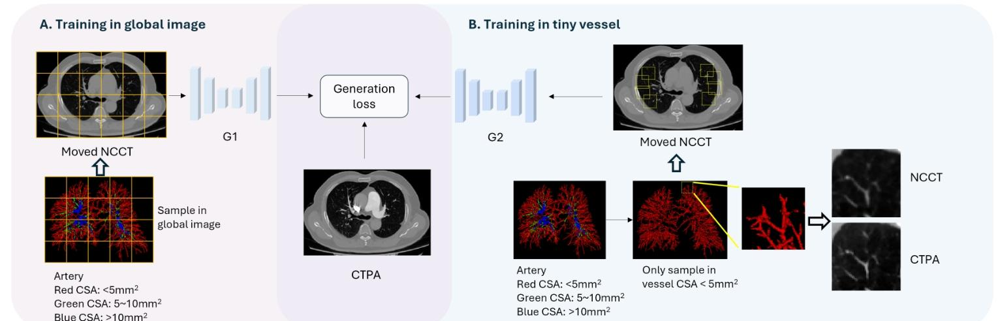
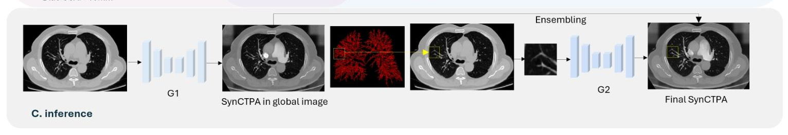
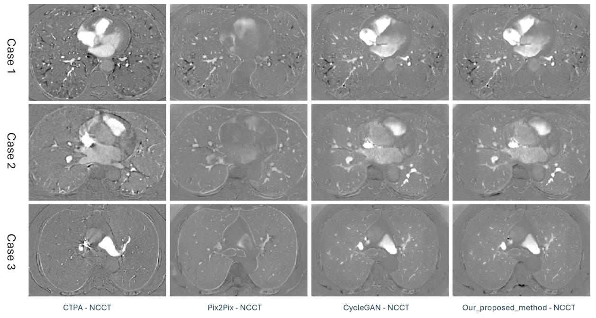
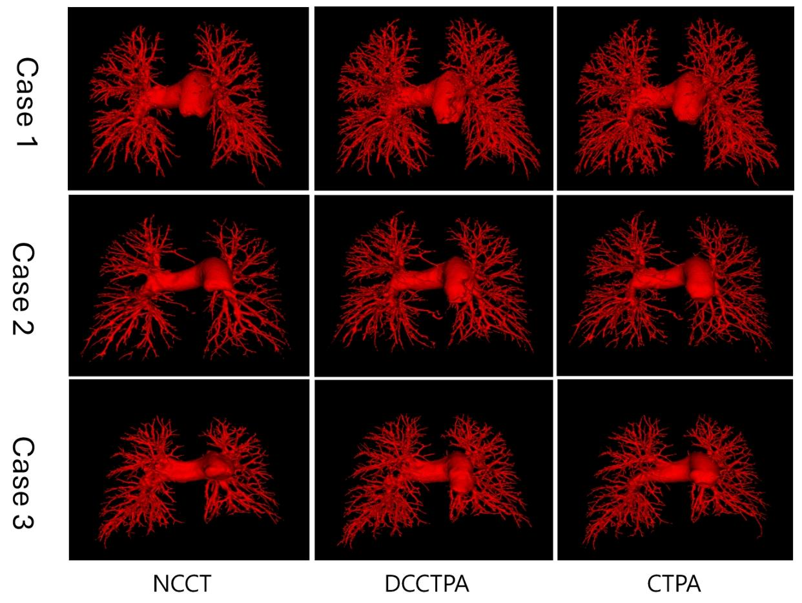
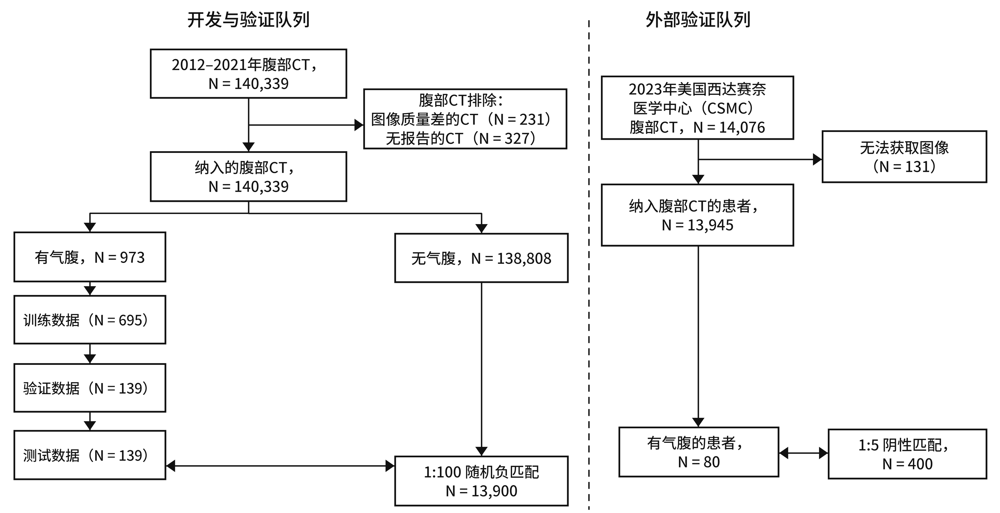
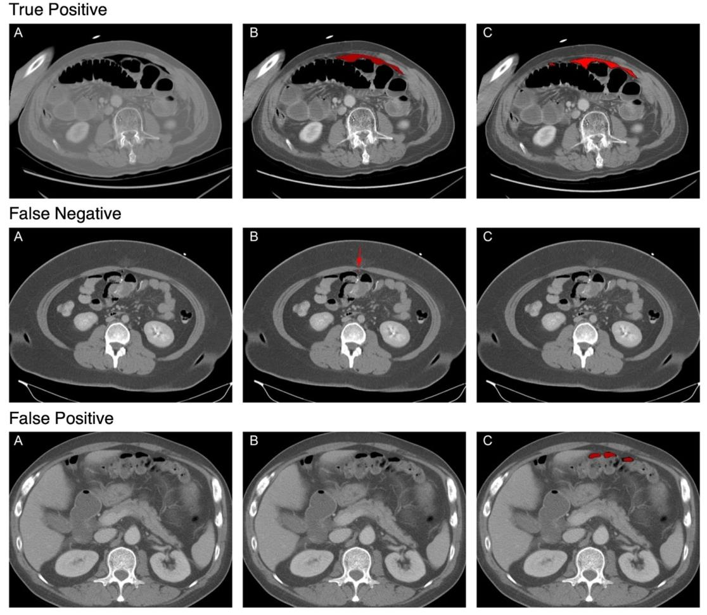
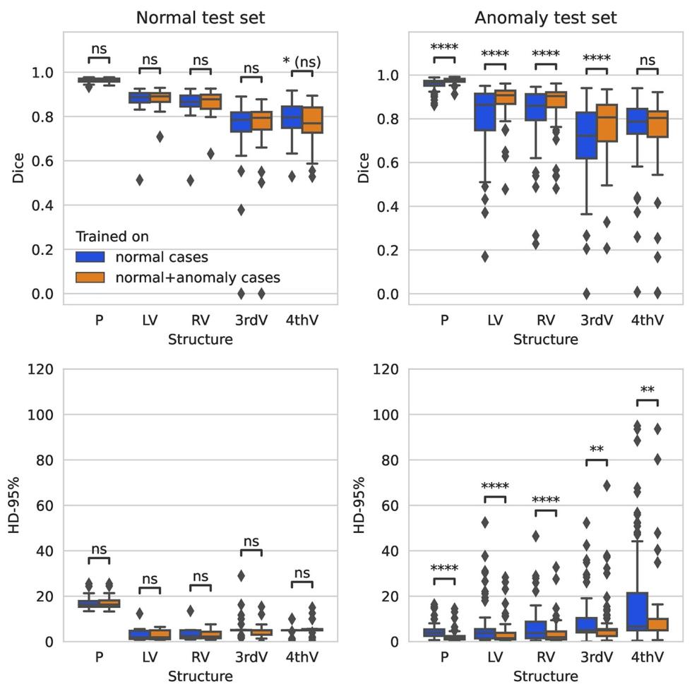
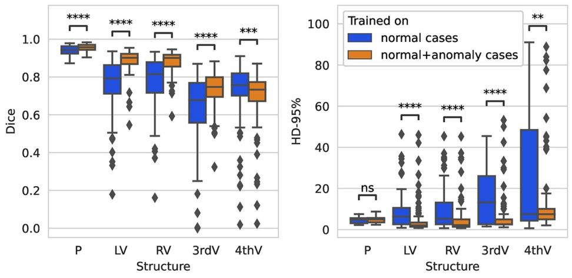

CT × DEEP LEARNING · 组会文献汇报
XXX · 26.09.14 · 01 / 43
THREE PAPERS · SYNTHESIS / DETECTION / SEGMENTATION
把 CT 读懂：分割
三篇论文，三种任务：用平扫 CT「算」出增强血管、在急诊腹部 CT 里找出气腹、在病灶存在时勾出脑实质与脑室。
P1 · 合成 · 数据 410 例
平扫 CT → 数字对比 CTPA（CT 肺动脉造影）
P2 · 检测 · 三队列 2 万+ 例
腹部 CT 气腹（腹腔游离气体）检测
P3 · 分割 · 训练 158+334 例
脑实质与脑室系统分割（含异常病灶）
汇报人 XXX · 2026.09.14 · 论文作者与汇报人信息严格区分
→ 方向键翻页 · ESC 索引 · N 备注
开场先给听众一个坐标系：今天不是念三篇论文的细节，而是用同一套语言（任务—方法—证据—边界）拆解它们。三篇分别对应 CT+AI 的三类基本任务：合成（把平扫 CT 变成增强 CT 的样子）、检测（在急诊腹部 CT 里找气腹）、分割（把脑实质与脑室勾出来）。封面上的作者与期刊属于论文 ；汇报人是XXX，日期 2026.09.14，两者不要混。全程遇到医学名词我会立即用一句话解释，例如气腹＝本该在肠腔里的气体跑到了腹腔里。
THREE TASKS · SYNTHESIS / DETECTION / SEGMENTATION
三篇论文，三种任务
一次汇报 · 三篇论文
同一类武器， 三篇都是「深度学习 + CT」，但输出完全不同：一张新图像、一个患者级判断、一幅解剖轮廓。看懂差异，也就看懂了医学影像 AI 的三条主流路线。
证据强度：P2 > P3 > P1
合成 Synthesis P1 · 平扫 CT → 数字对比 CTPA
用级联的两个生成器（G1 管全局、G2 管小血管），把不打对比剂的平扫 CT「算」成增强血管图。410 例三中心配对数据，下游肺血管分割的中心线召回率（clRecall）0.67→0.74，小血管体积一致性（ICC）0.53→0.76。
检测 Detection P2 · 腹部 CT 里找气腹
3D U-Net 逐体素找出腹腔内游离气体，再汇总成患者级判断。三个队列共 2 万余例，灵敏度 0.81–0.83、特异度 0.97–0.99；气体量充足时灵敏度升到 0.92–0.98。
分割 Segmentation P3 · 脑实质与脑室
同一个 2D U-Net 训练两次：只喂 158 例正常病例，或再补 334 例出血病例。补上异常数据后，出血集与「训练时没见过」的胶质瘤集（106 例）分割中位 Dice 都显著提升。
三篇用同一套评价语言：Dice （分割重叠度）、灵敏度/特异度 （查得全 / 不误报）、外部验证 （换一家医院再测）。差别在证据强度：P2 含前瞻与跨国外部队列，P1 只有自建测试集。
术语 合成（Synthesis） （让算法生成一张现实中没拍的图像） 分割（Segmentation） （给每个像素/体素盖章：它属于哪个结构） Dice （两个分割结果的重叠度，0 完全不重合、1 完全一致）
来源：三篇论文的摘要与结果表（P1 p1/p10/p11；P2 p1/p3；P3 p1/p4–p5）
这一页是三篇的路线图。讲法：先用「输入—输出」说清每篇要什么、给什么，再报一个最能代表它的数字。特别提醒：三篇的证据强度不一样，P2 有前瞻与外部验证，P1 只有自建测试集，P3 用公开数据集做三类测试。听众不需要记住全部数字，只要记住三个动词：合成、检测、分割。术语提醒：Dice 系数衡量两个轮廓重合程度，可以理解为「人工画的圈和算法画的圈，重叠了多少」。时间分配参考：开场四页共约 3 分钟。这页只给坐标系，不展开细节。
WHY THESE THREE · 三条现实压力
CT 越做越多、对比剂有风险、异常让算法失灵
01 · 压力来源
影像量在爆炸 美国急诊科 CT 使用率十年间从占就诊量 3.2% 升到 13.9%，增幅 330%；读片压力落在同样多的人身上。
→ 对应 P2：用算法分担急诊读片
330% 急诊 CT 使用率增幅
02 · 压力来源
增强 CT 有代价 碘对比剂诱发急性肾损伤发生在 5–10% 的受检者，过敏反应最高影响约 1%；高危患者因此被排除在 CTPA 之外。
→ 对应 P1：不注射对比剂也算得出增强图
5–10% 对比剂相关肾损伤发生率
03 · 压力来源
异常病例让算法失灵 欧洲 100 个获得 CE 认证的放射 AI 产品中，64 个没有已发表的同行评审疗效证据；而病人身上总是带着出血、肿瘤这类异常。
→ 对应 P3：用数据策略对抗异常
64 / 100 认证产品缺疗效证据
三篇论文各自回应其中一条：P1 用算法替代对比剂、P2 用算法分担急诊读片、P3 用数据策略对抗「异常」带来的失灵。
术语 CTPA （CT 肺动脉造影：打碘对比剂后拍 CT 看肺动脉） CE 认证 （欧盟医疗器械市场准入标志） 碘对比剂 （让血管在 CT 上发亮的含碘药水，有肾损伤与过敏风险）
来源：三篇论文引言各自引用（P1 p1–p2 / P2 p1–p2 / P3 p6–p7），非本研究实测
这一页解释「这三篇为什么要放在一场讲」：它们回应的是同一个现实——影像量增长、检查本身有风险、病人身上总有异常。三个数字要强调来源：330% 与 5–10%/1% 来自论文引用的既往文献，64/100 来自 2021 年一项对欧洲 CE 认证放射 AI 软件的独立审计，都不是本文实测。讲完后可以抛一句：如果你手上只有 10 分钟，你会先解决哪一条？可能被问：这三个数字可靠吗？答：都是论文正文引用的既往文献值；讲 P1/P2/P3 时会给出各自的一手数据。
SIX CONCEPTS · 听懂这三篇的最小概念集
听懂这三篇，只需要六个概念
01 CT 值（HU） CT 图像用 Hounsfield 单位衡量密度：水≈0 HU、空气≈−1000 HU、骨≥+1000 HU。数值越高（越亮）代表越致密。
例：气腹在 CT 上呈极低密度，在一堆软组织里非常醒目；而血管与周围组织密度接近时就「看不清」。
02 平扫 vs 增强 平扫 CT（NCCT）不打对比剂，血管与周围组织密度接近、血管看不清；增强 CT 打含碘对比剂，血管腔变亮。
例：P1 的目标就是用平扫 CT 合成出增强的效果，全程不打对比剂。
03 三类任务 合成＝生成一张现实中没拍的图；检测＝判断有没有病灶（可与分割联用）；分割＝逐像素/体素标出结构边界。
例：P2 用分割（逐体素找气体）支撑检测判断；P3 只做分割；P1 做合成后接下游分割。
04 Dice 系数 人工轮廓与算法轮廓的重叠度，取值 0–1，1 表示完全一致；是医学影像分割最常用的指标。
例：P3 用中位 Dice 报告脑实质 0.98、第四脑室 0.80——数字说明后者难得多。
05 灵敏度 / 特异度 灵敏度＝真有病的病例里查出多少；特异度＝没病的病例里正确排除多少。低患病率场景要特别看特异度。
例：P2 灵敏度 0.81–0.83、特异度 0.97–0.99；气腹患病率只有约 1%，高特异度才不至于淹在误报里。
06 外部验证 在一家医院训练，换另一家（甚至另一国）医院的数据再测，检验泛化能力；只做内部测试的结论更弱。
例：P2 在台湾训练、用美国 Cedars-Sinai 的 480 例做外部验证；P1 没有外部验证集。
用法 每页底部都有一条「术语」条，列出该页出现的专业词与一句话解释；正文里术语首次出现也会就地括注。
这是给非医学背景听众的脚手架页，可以慢一点讲。推荐顺序：先说 CT 值（密度刻度），再说「平扫 vs 增强」（为什么血管看不见），然后三类任务，最后三个评价词。提醒：Dice、灵敏度、特异度这三个词会在后面反复出现，理解它们就看懂了这类论文的 80% 结论。每条下面那行小字是「这个概念的实例」，用来把抽象定义挂到今天的论文上。六个概念里最容易混的是「检测」与「分割」：检测回答「有没有」，分割回答「在哪里」。P2 两者都做，P3 只做分割。
PAPER 01 · 合成 SYNTHESIS
05 / 43
论文一：不打对比剂，算出增强的肺血管 如果增强 CT 的风险来自碘对比剂，那能不能用算法把增强后的血管「算」出来？这篇来自北京协和、中日友好与佳能医疗中国团队的工作，用级联生成器回答了它。
论文原题 · ORIGINAL TITLE
Digital Contrast CT Pulmonary Angiography Synthesis from Non-contrast CT for Pulmonary Vascular Disease Diagnosis
面向肺血管疾病诊断的「非增强 CT → 数字对比 CT 肺动脉造影」合成
术语 CTPA（CT 肺动脉造影） （静脉打碘对比剂后拍 CT，让肺动脉显影，是诊断肺栓塞的参考标准） NCCT（平扫 CT） （不打对比剂直接扫描，血管与周围组织密度接近，细小血管看不清） DCCTPA（数字对比 CTPA） （本论文用算法合成的「假想增强」图像，全程不需要对比剂）
投稿稿（未正式发表，无期刊名与 DOI）· 北京协和医院 / 中日友好医院 / 佳能医疗（中国）
过渡页。交代论文一的研究者来自北京协和医院、中日友好医院与佳能医疗（中国）研发中心，是一篇中国团队的投稿稿。强调本页只提出核心问题：能不能不算「打针」就有增强效果。提醒听众：这篇尚未正式发表（无期刊名与 DOI），引用时要注明。
· CTPA（CT 肺动脉造影）：静脉打碘对比剂后拍 CT，让肺动脉显影，是诊断肺栓塞的参考标准
· NCCT（平扫 CT）：不打对比剂直接扫描，血管与周围组织密度接近，细小血管看不清
· DCCTPA（数字对比 CTPA）：本论文用算法合成的「假想增强」图像，全程不需要对比剂
摘要 · P1 · Digital Contrast CTPA（p1 摘要） · 本页为该论文摘要的独立解读页
06 / 43
ABSTRACT · 摘要原文中文解读（加粗＝重点）
论文一摘要：410 例三中心数据的无对比剂合成 CT 肺动脉造影（CTPA，打对比剂后看肺动脉的 CT）是诊断肺栓塞（PE） 与慢性血栓栓塞性肺动脉高压（CTEPH）的参考标准 ，但它依赖碘对比剂 ，会带来肾毒性 与过敏反应 风险，在高危患者中尤为突出。本研究提出一种方法：用基于循环一致性生成对抗网络（CycleGAN）的级联合成器 ，从平扫 CT（NCCT，不打对比剂的 CT）生成数字对比 CTPA（DCCTPA） 。共回顾性收集来自三家中心 的410 例 配对 CTPA 与 NCCT 扫描；模型在 249 例上完成内部训练与验证，另有 161 例作为测试集评估泛化能力并验证下游临床任务。与当前最先进（SOTA）方法相比，所提方法在定量指标（验证集 MAE 156.28、PSNR 20.71、SSIM 0.98；测试集 MAE 165.12、PSNR 20.27、SSIM 0.98）与定性可视化上取得最佳综合表现。该方法进一步应用于肺血管分割与血管定量：测试集上肺动脉与肺静脉分割的平均 Dice、clDice、clRecall 分别为 0.70、0.71、0.73 与 0.70、0.72、0.75；DCCTPA 与 CTPA 之间血管体积的组内相关系数（ICC）显著优于 NCCT 与 CTPA 之间（平均 ICC 0.81 vs 0.70 ），表明对小血管的增强尤其有效。
EN 原文（节选，p1）：Totally retrospective 410 paired CTPA and NCCT scans were obtained from three centers. … Inter-class Correlation Coefficient (ICC) for vessel volume between DCCTPA and CTPA was significantly better than that between NCCT and CTPA (Average ICC: 0.81 vs 0.70), indicating effective vascular enhancement in DCCTPA, especially for small vessels.
术语 CTPA （打对比剂后看肺动脉的 CT，本文的「老师图」） CycleGAN （不需要成对图像就能互相转换风格的生成对抗网络） clRecall （中心线召回率：有多少该找到的细血管真被找到了） ICC （组内相关系数：两组测量结果的一致程度，越接近 1 越一致）
来源：论文 p1 摘要、p10 表 3、p11 表 4；ICC 平均值由表 4 三档取均值推算（与原文自洽）
本页重点 · KEY POINTS
重点 01 · 数据规模 410 例配对 CTPA/NCCT，来自三家中心（训练 199 / 验证 50 / 测试 161）
重点 02 · 方法定位 级联 CycleGAN 双生成器，不注射碘对比剂即可得到类增强肺血管图
重点 03 · 临床增益 clRecall 0.67→0.74；血管体积 ICC 平均 0.81 vs 0.70，小血管 0.53→0.76
摘要逐句讲会很闷，建议按「问题—方法—数据—结果」四段各一句概括，再落到三个重点。提醒：摘要原文称「最佳综合表现」，但其表 1/表 2 显示 pix2pix 的 MAE/PSNR 更好（见第 14、17 页），所以本页只把摘要当作「作者自述」呈现，不做背书。术语速记：CTPA 是打了针的 CT，NCCT 是没打针的 CT，DCCTPA 是算法算出来的「假的打针图」。补充一句：所谓「三中心」包含企业方 Canon 医疗（中国）研发中心，并不等于三家医院，引用时要留意。
CLINICAL PAIN · 为什么需要「算」出增强图
对比剂是有代价的，而小血管本来就看不见
01 · 临床痛点
增强 CT 是金标准，但有人做不了 CTPA 是肺栓塞（PE）与慢性血栓栓塞性肺动脉高压（CTEPH）的诊断参考标准，但碘对比剂可能引发急性肾损伤与过敏反应，高危患者常被直接排除在这项检查之外。
→ 本文数据：410 例配对 CTPA/NCCT
5–10% 对比剂诱发急性肾损伤的比例
02 · 临床痛点
替代方案都不理想 低对比剂剂量协议与双能量 CT 仍需注射对比剂、且依赖专用设备；灌注-通气显像与平扫 CT 精度不足，只能算「次优替代」。
→ 本文做法：用平扫 CT 合成增强效果
1% 对比剂过敏反应最高影响比例
03 · 图像上的难点
细小血管在平扫 CT 上本来就看不见 对比剂让血管腔密度升高才显影；没有对比剂时，亚段级小血管（横截面积 CSA<5mm²）与周围肺组织密度差别很小，是本任务最难的部分。
→ 本文指标：按 CSA 三档分别评价
< 5mm² 最难合成的血管档位（CSA）
论文把这三条痛点合成一个目标：在不注射对比剂的前提下，得到接近增强 CT 的肺血管显示 ，并用下游的血管分割与血管定量证明「算出来的图临床上用得上」。
术语 肺栓塞（PE） （肺动脉被血栓堵住，可致命） CTEPH （慢性血栓栓塞性肺动脉高压：血栓长期堵塞导致肺血管压力升高） 亚段动脉 （肺最末端、极细的小动脉分支，平扫 CT 最容易漏） CSA （横截面积：血管横切面的面积，用来分大中小三档）
来源：论文 p1–p2（引言与对比剂风险引用）、p3–p4（血管分档标准）
这一页讲「为什么值得做」。三个数字分别说明：检查本身有风险（5–10% 肾损伤、最高约 1% 过敏）、替代方案不够好、以及图像上最难的是小血管。注意数字来源：5–10% 与 1% 是论文引用的既往文献（Mehran & Nikolsky 2006、Wang et al. 2009），不是本研究测量。对非医学听众可以打个比方：对比剂像显影剂，打进去血管才「亮」；高危病人不能打，于是我们想用算法把亮度「画」出来。可能被问：为什么不直接用低剂量对比剂？答：低剂量协议仍需注射，且有硬件门槛，对肾功能差或有过敏史的患者依然不适用。
论文一 · 方法总览 · 训练部分（Fig.1 的 A、B 两段）
08 / 43
两个生成器： 
Fig.1 上半部分：训练流程（A 全局 G1 / B 小血管 G2） 论文 Fig.1 上半 A+B ｜ 血管分档：红 <5 mm² · 绿 5–10 mm² · 蓝 >10 mm²
先说这张图的骨架：上面两块（A、B）都是训练，区别只有一个——A 用整幅图训练，B 只用小血管的一小块训练 ；推理（C）在下一页。看 A 段：输入是配准过的平扫 CT（Moved NCCT，黄色网格表示「切成小块喂网络」），它下面那张带彩色血管的图是同一个输入 ，只是叠加了血管按粗细的分档着色；右边 G1 把小块还原成合成图，和真实增强 CT（CTPA，即「老师图」）一起送进 Generation loss。看 B 段：同样一对平扫/增强图，但只取极小的一角，样本只从最细血管区（CSA<5mm²）采、块更小（64³ 对 96³）。G1 与 G2 结构完全相同，差别只在训练数据 ——这正是级联的分工。
A 段 · 教 G1 什么
全局映射
输入整幅 Moved NCCT（已配准平扫图），老师图是真实 CTPA。G1 学的是全局灰度映射 ：把血管腔整体提亮、让整幅平扫图看起来像打了对比剂。输出 SynCTPA（全局版合成图）。
B 段 · 教 G2 什么
小血管纹理
同样一对平扫/增强图，但样本只取自横截面积 CSA<5mm² 的最细血管区，块尺寸缩到 64³（G1 是 96³）。G2 只见过小血管，于是专精细分支的局部纹理。
中间那个损失框
A、B 共用
Generation loss 是 A、B 共用的生成损失，目标都是真实 CTPA。论文未给出损失函数公式与权重 ，只声明使用 CycleGAN 框架及其循环一致性损失（用来兜底配准误差）。
术语 Moved NCCT （已经和增强 CT 对齐（配准）过的平扫 CT） CTPA （打了对比剂的增强 CT，本页当作「老师图」） CSA （血管横截面积，用来把血管分成红/绿/蓝三档） 生成损失 （让合成图尽量接近真实增强图的损失（论文未给公式））
来源：论文 Fig.1（上半 A+B）与 p3–p4 方法描述
这一页是全篇最重要的方法图，只讲「训练」两段。读图顺序：① A 段左上两张图是同一个输入（Moved NCCT），下面那张只是叠加了血管分档颜色；② A 段右边 G1 + Generation loss + CTPA，说明「谁在教谁」——CTPA 是老师图；③ B 段与 A 段的唯一差别是采样区域（只取 CSA<5mm² 的小血管）和块尺寸（64³ vs 96³），G1/G2 结构完全相同，所以「级联」的分工来自数据而不是网络。常见追问的答法：问 为什么用 CycleGAN 却处处是配对图？答 训练与评价用配对数据当老师，选 CycleGAN 是为了用它循环一致性损失缓解配准误差对生成结果的影响（p3）。问 Generation loss 的公式与权重？答 论文全文没有损失函数公式、没有权重与 L1/L2 说明，只有这个框的命名。问 红绿蓝是什么？答 同一棵血管树按横截面积分档：红 <5mm²、绿 5–10mm²、蓝 >10mm²，不是三个病例。补充：G1 与 G2 都基于 CycleGAN 框架、生成网络用 SwinUNETR；论文没有公布判别器结构，也未给出融合权重。
INFERENCE PIPELINE · 平扫 CT → 增强 CTPA
五步把平扫 CT 变成增强 CTPA

论文 Fig.1（下半，C）：推理链 平扫 CT → 全局合成 → 小血管块精修 → 高斯融合 → 最终 DCCTPA
STEP 01 配准 把同一患者的平扫与增强 CT 对齐（选用深度学习方法 GroupMorph）。配准是上限：对不齐，后面再合成也白搭。
STEP 02 全局合成 G1 在整幅图上出一版 SynCTPA：胸腔整体已经像增强图，但最细的分支仍然糊。
STEP 03 血管掩膜分档 用分割模型在平扫图上 生成血管掩膜，按 CSA 分三档（红 <5 / 绿 5–10 / 蓝 >10 mm²）。
STEP 04 小血管精修 滑窗切块（重叠 0.5），只把含 CSA<5mm² 血管的块交给 G2 重画；其余块沿用 G1 的结果。
STEP 05 高斯融合 G2 与 G1 的结果按高斯权重平滑拼接 → Final SynCTPA，也就是论文所说的 DCCTPA。
读图提示（上方条带＝Fig.1 的 C 段） ：平扫 CT →（配准）→ G1 出全局合成图 → 生成血管掩膜并按粗细分档 → 黄框标出含小血管的位置、切出小块 patch → 交给 G2 精修 → 与 G1 结果高斯融合 → Final SynCTPA。两个容易讲错的地方：① 推理时的掩膜来自平扫图 ，而训练 G2 时用的是增强图 的分割结果（论文 p4），两处来源不同；② 「级联」不是把网络叠起来，而是分工 ——先把大结构做对，再让第二个网络专补细节，这也解释了为什么增益集中在 clRecall 而不是像素误差。
术语 配准（Registration） （把两次不同扫描的图像对齐叠好，让同一根血管对得上） 滑窗重叠率 0.5 （相邻图像块之间重叠一半，避免拼接处出现接缝） SynCTPA （论文对「合成出来的 CTPA」的简称）
来源：论文 p4 推理流程（Fig.1(c) 原图裁切）
这一页把推理流程拆成五步，配合上面的时间线讲。慢一点讲第 3 步：算法先在平扫图上找血管、量出粗细，然后只把「细血管出现的那些小块」送去精修，这样算力花在刀刃上。第 4 步的重叠率 0.5 可以解释为「切块时互相压一半」，避免边角上出现断裂。第 5 步的高斯加权融合，可以理解为「两块拼接处按距离平滑过渡」。顺序很重要：推理时的血管掩膜是在平扫图上生成的，而不是在增强图上——两处来源不同，是这套流程的一个潜在弱点。
CALIBER BINNING · 按横截面积分三档
血管按粗细分三档，真正的瓶颈在最细的一档
同一把「尺子」贯穿三处：训练采样、推理分块、结果评价（按 CSA 分层报 ICC）。
第二个生成器还调小了图像块：G1 用 96×96×96，G2 用 64×64×64——块越小，小血管在块内的占比越高。
RED
红 · CSA < 5 mm² 最细的一档：亚段级小血管，最容易被平扫 CT 漏掉，也是 G2 专门负责的对象。
训练块只在含这一档血管的区域采样；下游评价里 clRecall 的提升主要来自它。
GREEN
绿 · CSA 5–10 mm² 中间档：肺血管树的「过渡带」，管径不如近端粗、数量不如远端多。
后文失败模式正出现在这一档：DCCTPA 的体积一致性 ICC 反而略降（0.83 vs 0.84）。
BLUE
蓝 · CSA > 10 mm² 最粗的一档：近端肺动脉与静脉主干，本来就较容易合成。
一致性提升明显（ICC 0.72→0.85），但论文也承认这一档原本就相对容易。
术语 横截面积（CSA） （血管横切面的面积，用来判断血管粗细） 亚段级血管 （肺最末端的小分支） ICC 分层 （按血管粗细分别统计一致性，而不是只看平均值）
来源：论文 p3–p4（分档与采样）、p6（评价分档）、p11 表 4（分层 ICC）
这一页解释「为什么需要第二个生成器」：外周肺血管极细，全局模型顾不上，所以第二张网络只盯着最细的一档。上面的三个圆示意三档粗细（红最细、蓝最粗），标签用 HTML 写在卡片里。注意论文自身有个笔误：2.1 节把第三档写成「CSA<10mm²」，但图标签与 3.3.4 节都是「>10mm²」，我们按后者讲。收起前埋个伏笔：中档（绿）后面会成为一个失败模式。补充：训练阶段的小血管采样用的是增强图的分割结果，而推理阶段的掩膜来自平扫图——论文自己没解释这个不一致。
配准选不对，后面的合成上限就定了 三种配准方法的对齐效果（节选 1 例，原图 3 例） 01 · 怎么读这张图 每一行是一个病例，每一列是同一层的不同图像：第 1 列平扫 CT、第 2 列真实增强 CT ，第 3–5 列是三种配准的结果。红框＝局部放大区，黄色箭头指出对不齐的位置 。
02 · 看什么 盯住胸膜下的细小血管走行：Elastix 与 SyN 两列在箭头处错位；GroupMorph（最后一列）与第 2 列增强图的走向最吻合——这就是论文选它的理由。
03 · 三个候选方法 Elastix＝传统基于强度的配准工具箱；SyN＝对称微分同胚配准；GroupMorph＝深度学习方法（分组网络 + 上下文融合）。
04 · 为什么没有量化指标 血管只占胸部体积极小比例 ，互信息、归一化互相关这类全局指标会被背景主导，反映不出细血管的对齐精度；论文改用两位 >5 年胸部影像经验医师的视觉评估 。
术语 配准（Registration） （把两次扫描对齐，让同一根血管在两张图上位置一致） 互信息 （一种衡量两张图相似度的全局指标，容易被大面积背景主导） 微分同胚 （一种保证形变可逆、平滑的配准数学约束）
来源：论文 Fig.2（节选 1 例）与 p4–p6、p11 讨论
竖图页：左侧是论文 Fig.2，列依次是平扫图、增强图、以及三种配准方法的变形结果。讲法：请听众盯住胸膜下的细小血管走行，GroupMorph 那一列与增强图最吻合。必须说明的是：这个结论没有量化指标，只有两名放射科医师的视觉评估；而且正文把 Fig.2(e) 误写成 DCCTPA（图注是变形后的平扫图）。可能被问：为什么不用互信息评估配准？答：血管只占胸部体积极小比例，全局指标会被大面积背景与肺实质主导。
METRICS · 四把尺子
从像素到血管拓扑：越往后越贴近临床价值
01 · 像素级
MAE 与 PSNR
$$\mathrm{MAE}=\frac{1}{N}\sum_{i=1}^{N}\left\|x_{i}-y_{i}\right\|$$
逐像素比较合成图与真实增强图的差距：MAE 越小越好；PSNR 越大越好。
论文式 (1)–(2) · p5
02 · 结构级
SSIM
$$\mathrm{SSIM}(x,y)=\frac{\left(2\mu_{x}\mu_{y}+c_{1}\right)\left(2\sigma_{xy}+c_{2}\right)}{\left(\mu_{x}^{2}+\mu_{y}^{2}+c_{1}\right)\left(\sigma_{x}^{2}+\sigma_{y}^{2}+c_{2}\right)}$$
综合亮度、对比度与结构相似性，越接近 1 越像（三篇论文的 SSIM 均为 0.98，说明该指标已饱和、区分度低）。
论文式 (3)–(4) · p5
03 · 结构与拓扑
Dice / clDice / clRecall
$$\mathrm{Dice}=\frac{2\left|A\cap B\right|}{\left|A\right|+\left|B\right|}\qquad \mathrm{clDice}=2\cdot\frac{P_{cl}\cdot R_{cl}}{P_{cl}+R_{cl}}$$
Dice 看分割区域重叠；clDice 在血管骨架上计算，强调细长管状结构的连通性；clRecall 看有多少真值中心线被覆盖（漏检多少）。
论文式 (5)–(6) · p5–p6
这四类指标构成本文的结果阶梯：像素指标打平、结构指标饱和、拓扑指标（clRecall）才拉开差距 。此外论文还用组内相关系数（ICC）比较「合成图 vs 真实增强图」与「平扫图 vs 真实增强图」的血管体积一致性（见第 16 页）。
术语 MAE / PSNR （平均绝对误差 / 峰值信噪比：图像重建的常用像素指标） SSIM （结构相似性指数） clDice （在血管骨架上算的 Dice，考察细长结构是否连通） ICC （组内相关系数，0–1，衡量两组测量一致性）
来源：论文式 (1)–(6)（p5–p6）。注：论文未给出任何损失函数公式，此处只列评价指标。
这一页是全场唯一的「论文一公式页」，公式全部来自论文原文（式 1–6），不是我们编的。讲法：先说像素指标最直观但最不贴近临床；再说 SSIM 在三篇里都是 0.98，已经失去区分力；最后说 clDice/clRecall 是为血管这类细长结构设计的，也是本文唯一赢的地方。如果有听众追问「损失函数怎么写的」，如实回答：论文没有给出任何损失公式，只声明用了 CycleGAN 与循环一致性损失。讲公式不要读符号，读含义：MAE 是「平均差多少」，PSNR 是「信号与噪声的比」，SSIM 是「结构像不像」。
TRAINING SETUP · 六个关键参数
配置朴素，算力花在 3D 图像块上
200轮
训练总轮数（epoch）
论文 3.2 节给出的是 epoch 数，未给迭代步数与训练时长。
2×10⁻⁴
初始学习率
Adam 优化器；β1=0.5、β2=0.999——注意 β1=0.5 与常规默认值 0.9 不同，为原文所写。
2
批大小（batch size）
3D 图像训练显存占用大，批大小只能取 2。
96³ / 64³
两阶段图像块尺寸
G1 用 96×96×96、G2 用 64×64×64；块变小是为了提高小血管在块内的占比。
0.5
推理滑窗重叠率
相邻块重叠 50%，减少拼接处的接缝与断裂。
A800
训练与推理硬件
单卡 NVIDIA A800；框架为 PyTorch。
值得一提的是：论文没有公布判别器结构、迭代步数与损失权重 ，也没有给出图像块的具体采样比例。这类信息缺失会让复现变得困难——这正是读方法类论文时要留意的地方。
术语 epoch （把整个训练集完整过一遍叫一轮） Adam / β1 / β2 （一种常用优化器及其两个指数衰减率参数） 滑窗（sliding window） （把大图像切成重叠的小块逐块推理）
来源：论文 3.2 节（p4）
这一页只是把训练参数摊开，讲的时候抓两个点：一是 3D 图像块（96³）是算力大头；二是论文没给判别器结构、迭代步数、损失权重——复现门槛高。β1=0.5 这个细节可以提一句「与常规 0.9 不同，原文如此」。如果时间紧，这页可以只讲前两行，把其余留给听众自己看。200 epoch 与 batch size 2 的组合意味着 3D 训练相当耗时，但论文没有报告训练时长，复现时要自己估算。
QUANTITATIVE RESULTS · 表 1 / 表 2（平均 MAE ↓ / PSNR ↑ / SSIM ↑）
像素指标上，它并没有赢
方法 验证集（50 例）MAE / PSNR / SSIM 测试集（161 例）MAE / PSNR / SSIM NCCT（平扫，不打对比剂） 200.12 / 19.05 / 0.97 195.98 / 19.19 / 0.97 pix2pix（需要配对数据的生成网络） 150.47 / 21.17 / 0.98 154.34 / 20.95 / 0.98 CycleGAN（无配对图像翻译） 156.26 / 20.71 / 0.98 165.29 / 20.22 / 0.98 本文级联 CycleGAN 156.28 / 20.71 / 0.98 165.12 / 20.27 / 0.98
相对平扫 CT 基线 确实大幅改善：验证集 MAE 从 200.12 降到 156.28（降低 43.84），PSNR 提升 1.66。
但相对 pix2pix 全面落后 ：测试集 MAE 165.12 vs 154.34、PSNR 20.27 vs 20.95；相对标准 CycleGAN 也几乎持平（156.28 vs 156.26）。
SSIM 三种方法均为 0.98——指标饱和，无法区分优劣。
原生重建自论文表 1、表 2（p8）。
术语 基线（baseline） （用来对比的参照方法，这里是「什么都不做」的平扫图） pix2pix （另一种图像翻译网络，但训练时需要严格配对的图像） 指标饱和 （指标已接近上限，无法再区分方法之间的差异）
来源：论文表 1、表 2（p8）
这一页是「读论文要看表」的示范。先看谁的数字最好——是 pix2pix，不是本文方法。再指出本文真正的改善是对比「平扫 CT 基线」：MAE 降低 43.84。最后点出摘要与表格的冲突：摘要称取得「最佳综合表现」，但表里 pix2pix 的 MAE/PSNR 更好。这也是组会里最值得讨论的点：作者为什么仍然声称 SOTA？他们随后转向了定性证据（下一页）。可能被问：为什么三种方法的 SSIM 都是 0.98？答：指标饱和了——合成图与真实增强图在结构相似性上差异太小，无法区分方法优劣。
减法图： 
减法图对比各方法的血管增强量 论文 Fig.3 · p9 · 3 例 × 4 列
01 · 怎么读这张图 每一格都是「某方法的合成结果减去对应的平扫 CT 」。减去平扫图之后，剩下的亮处就是该方法「凭空加出来的血管增强量」——越亮＝增强越多 ；而真实增强图的减法结果（第 1 列）就是标准答案。
02 · 四列在比什么 第 1 列 CTPA−NCCT＝参考；第 2 列 pix2pix−NCCT；第 3 列 CycleGAN−NCCT；第 4 列本文方法−NCCT。三行是三个不同病例。
03 · 结论看哪里 第 2 列在肺野外周大片发暗＝pix2pix 增强明显不足 ；第 3、4 列整体接近参考列，但彼此差异在肉眼层面很小——所以这张图能支持「优于 pix2pix」，不足以支持「优于 CycleGAN」 （论文自己也承认）。
术语 减法图（subtraction） （两张图逐像素相减，用来突出差异（这里突出血管增强量）） 定性评估 （靠人眼判断图像质量，而不是靠数字指标） 伪影（artifact） （算法生成的、解剖上不存在的错误结构）
来源：论文 Fig.3 与 p8–p9 定性分析
这一页是论文一最有说服力的图之一，但要注意讲清楚它是「定性」的：论文自己承认「粗略视觉检查下与 CycleGAN 相当」，像素指标也没赢。所以这张图能支持的说法是「pix2pix 的增强明显不足」，不能支持「本文方法全面优于所有基线」。下一页给出论文真正的强项：下游分割任务。提醒听众：减法图是「合成结果减平扫图」，看的是增强量；这与第 8 页的整体流程图不是一回事。
合成图的价值： 
三种输入下肺动脉分割结果的三维可视化 论文 Fig.5 · p11 · 3 例 × 3 列 ｜ clRecall 0.67→0.74 ｜ 小血管 ICC 0.53→0.76 ｜ 中血管 0.84→0.83
01 · 怎么读这张图 三行＝三个病例；三列＝同一套分割方法在平扫 CT / 合成图（DCCTPA）/ 真实增强 CT 上勾出的肺动脉树，再做成三维立体显示。红色越密、分支越多，说明这套输入能支撑分割模型找到更多血管。
02 · 看什么 对比同一行的第 1 列与第 2 列：合成图的远端分支明显更密、更接近第 3 列的真实增强图——这就是「细血管被找回来了」的直观证据（对应的量化指标是 clRecall）。
0.67 → 0.74 clRecall 平均中心线召回率提升，主要来自更多细小的外周血管被找回
0.53 → 0.76 小血管 ICC CSA<5mm² 档位的血管体积一致性大幅改善
0.84 → 0.83 中血管 ICC 5–10mm² 档位反而略降，是本文的失败模式之一
术语 中心线召回率（clRecall） （真值血管骨架被覆盖的比例，反映漏检程度） 三维可视化（3D rendering） （把分割结果重建成三维模型，便于整体比较血管丰富度） Dice （分割区域重叠度）
来源：论文表 3、表 4（p10–p11）与 Fig.5
收束论文一：临床真正关心的不是像素误差，而是「能不能看到那根细血管」。这一页也点出边界：分割仍未达到真实增强 CT 的水平（论文自述 residual gap），中等血管档位甚至略降。下一张给出系统的批判清单。补充：ICC（组内相关系数）衡量的是两组测量之间的一致性，不能理解成「正相关」；越接近 1 表示两种测法给出的血管体积越一致。
LIMITS · 四个必须说清的边界
论文一：哪些结论现在还不能信
边界 01
摘要与表格冲突 作者声称取得「最佳综合表现」，但表 1 / 表 2 显示 pix2pix 的 MAE 与 PSNR 更优（测试集 154.34 / 20.95 vs 165.12 / 20.27）。摘要里的「all markedly improved」也不成立：平均 clDice 0.72 对 0.72 没有变化，静脉 clDice 甚至由 0.73 降到 0.72。
证据：表 1/表 2 测试集 MAE 154.34 / 20.95 vs 165.12 / 20.27。
边界 02
相对标准 CycleGAN 几乎零增益 验证集 MAE 156.28 vs 156.26、PSNR 20.71 vs 20.71；测试集 MAE 165.12 vs 165.29。第二级生成器（G2）的贡献主要出现在定性减法图上，而不是任何像素或重叠度指标——这正是「级联」设计的价值需要被证明的地方。
证据：验证集 MAE 156.28 vs 156.26；测试集 165.12 vs 165.29。
边界 03
中等血管是失败模式 CSA 5–10mm² 档位的体积一致性 ICC 由平扫的 0.84 降到合成的 0.83。作者解释为：平扫图上血管边界识别差、分割容易偏大，增强后边界更薄更贴近真实——换言之，这一档存在「增强与结构连续性」的取舍。
证据：表 4 中 5–10 mm² 档 ICC 0.84（平扫）→ 0.83（合成）。
边界 04
缺读片者研究与外部验证 没有任何独立读片者研究（无诊断灵敏度/特异度、无读者间一致性）；训练与测试虽跨三中心，但论文自己把「外部验证集收集」列为待补工作；损失函数、判别器结构均未公开，复现门槛高。
证据：全文 0 个损失公式、0 项读片者指标。
如果要继续推进这项工作，最该补的是三件事：独立的读片者研究 （证明合成图能改变诊断）、真正的外部验证集 （另一家医院的数据）、以及相对 pix2pix 的公平对比与消融 （说明第二级生成器到底带来了什么）。
术语 读片者研究（reader study） （让多位医生在不知情的情况下读片，比较用与不用 AI 的诊断表现） 消融实验（ablation） （逐个去掉方法组件，验证每个组件的作用） 外部验证集 （来自训练之外机构的数据，用于检验泛化）
来源：论文表 1–表 4 与 Discussion/Conclusion 自述（p8–p12）
这一页是组会最该讨论的地方，可以停下来问听众：如果你是审稿人，你会要求补什么？四条边界里，第 1 条（摘要与表格冲突）和第 2 条（相对 CycleGAN 几乎零增益）最关键——它们决定了这项工作的实际贡献有多大。第 4 条提醒我们：三中心数据不等于外部验证，因为测试集可能仍然来自同一套采集流程。收尾一句：论文一的「卖点」其实在下游任务（clRecall 提升），而不是它摘要里宣称的全面超越。提问准备：如果作者补做外部验证集，你认为哪一项最可能下降？（提示：小血管 clRecall 与 ICC 最依赖训练数据的采集特性。）
PAPER 02 · 检测 DETECTION
18 / 43
论文二：让算法先发现急诊 CT 里那 1% 的气腹 气腹（腹腔里出现本该在肠腔内的游离气体）患病率只有约 1%，却常常决定要不要立刻开刀。PACT-3D 用 3D U-Net 逐体素找出气体，再给出患者级判断，并在三个队列上做了验证。
论文原题 · ORIGINAL TITLE
PACT-3D, a deep learning algorithm for pneumoperitoneum detection in abdominal CT scans
PACT-3D：一种用于腹部 CT 气腹检测的深度学习算法
术语 气腹（pneumoperitoneum） （腹腔内、肠腔外的游离气体，多由胃肠穿孔漏出） 3D U-Net （医学图像分割最常用的编解码网络的三维版本，逐体素输出预测） 前瞻性验证 （模型上线后按时间顺序收集新数据测试，比回顾性更接近真实使用）
Nature Communications 2024;15:9660 · DOI 10.1038/s41467-024-54043-1 · 代码已开源（github.com/IMinChiu/pact-3d）
过渡页。交代这是三篇中唯一已正式发表在 Nature Communications 的工作，也是唯一同时做了前瞻与跨国外部验证的。把「气腹」这个词讲清楚：气体本应在肠子里，跑到腹腔就是急症信号，最常见原因是胃肠穿孔。提醒听众：这篇的方法本身并不复杂（3D U-Net + 分割掩膜），复杂的是数据构造与验证设计——这也正是它的贡献。来源可查：论文代码已在 GitHub 开源。
· 气腹（pneumoperitoneum）：腹腔内、肠腔外的游离气体，多由胃肠穿孔漏出
· 3D U-Net：医学图像分割最常用的编解码网络的三维版本，逐体素输出预测
· 前瞻性验证：模型上线后按时间顺序收集新数据测试，比回顾性更接近真实使用
摘要 · P2 · PACT-3D（p1 摘要） · 本页为该论文摘要的独立解读页
19 / 43
ABSTRACT · 摘要原文中文解读（加粗＝重点）
论文二摘要：三队列两万余例扫描，灵敏度 0.81–0.83、特异度 0.97–0.99 在检测气腹时的延误或误诊 会显著增加死亡率与并发症率。我们开发并验证了一个深度学习模型，用于在 CT 图像中识别气腹。该模型在远东纪念医院 （2012 年 1 月—2021 年 12 月）的腹部扫描上训练，并使用同一中心于 2022 年 12 月至 2023 年 5 月间采集的模拟测试集（14,039 例扫描） 与前瞻性测试集（6351 例扫描） 进行评估。外部验证纳入了来自 Cedars-Sinai 医学中心的 480 例扫描 。总体而言，该模型在回顾性、前瞻性与外部验证中取得灵敏度 0.81–0.83 、特异度 0.97–0.99 ；当排除仅有少量游离气体（总量 <10 ml ）的病例后，灵敏度提升至 0.92–0.98 。这些结果提示，该模型配合分割掩膜能够为 CT 中的气腹提供准确且一致的预测，有望加速急诊中的诊断与治疗流程。
EN 原文（节选，p1）：External validation included 480 scans from Cedars-Sinai Medical Center. Overall, the model achieves a sensitivity of 0.81–0.83 and a specificity of 0.97–0.99 across retrospective, prospective, and external validation; sensitivity improves to 0.92–0.98 when cases with a small amount of free air (total volume <10 ml) are excluded.
术语 气腹（pneumoperitoneum） （腹腔内游离气体，多由胃肠穿孔引起） 灵敏度（sensitivity） （真有气腹的病例里，模型查出多少） 特异度（specificity） （没有气腹的病例里，模型正确排除多少） 模拟测试集 （按真实患病率（约 1:100）人工构造的回顾性测试集）
来源：论文 p1 摘要、p3 表 1/表 2 与 Fig.1；前瞻队列阳性例数原文三处不一致（82 / 69 / 67），本页只引用表 2 的报告值
本页重点 · KEY POINTS
重点 01 · 三队列规模 模拟测试集 14,039 例、前瞻测试集 6,351 例、外部验证 480 例（80 阳性 + 400 匹配阴性）
重点 02 · 核心性能 灵敏度 0.81–0.83、特异度 0.97–0.99；在患病率约 1% 的真实场景下保持高特异度
重点 03 · 量的依赖 排除总量 <10 ml 的少量气腹后，灵敏度升至 0.92–0.98——最擅长抓需要紧急干预的大量气体
摘要要点：三队列（两个来自同一家医院、一个来自美国的 Cedars-Sinai），性能在两个队列间高度一致，而且气体量越大越准。对非医学听众解释「特异度」的重要性：气腹患病率只有约 1%，如果特异度不够，模型会把大量正常人报成阳性，医生很快就会忽略报警（报警疲劳）。需要提醒：原文未报告 AUC 与准确率，也有若干数字自相矛盾（见第 28 页），本页只呈现摘要说法。补充：外部验证集实际规模是 480 例 = 80 例阳性 + 400 例按年龄性别匹配的阴性，来自美国 Cedars-Sinai 医学中心。
CLINICAL PAIN · 为什么要在气腹上做检测
气腹少见、但漏不起，读片负荷还在涨
01 · 临床痛点
延误诊断的代价很高 气腹的首要病因是穿孔性内脏，占 85–95%；及时识别可以避免走向脓毒症（全身感染）。论文引用的数据显示，急诊 CT 解读延迟平均约 2 小时。
→ 本文队列：140,339 例中筛出 973 例阳性
85–95% 穿孔性内脏占气腹病因的比例
02 · 临床痛点
CT 是金标准，但读片负荷在涨 CT 诊断气腹的文献灵敏度约 96–100%，是影像学金标准；但美国急诊 CT 使用量十年增长 330%，阅片压力与漏诊风险同步上升。
→ 本文验证：三队列共 2 万余例
330% 急诊 CT 使用量十年增幅
03 · 为什么需要算法
低患病率 + 经验差异 急诊 CT 解读的不一致率在 13.5%–30.0% 之间，其中 7.2% 的患者出现不良后果；只有 62.8% 的住院医师对独立判读气腹有信心。
→ 本文定位：分诊工具而非诊断替代
7.2% 误读导致不良后果的患者比例
算法在论文中的定位不是替代医生，而是分诊（triage） ：对海量急诊 CT 先筛一遍，把最可能需要立刻手术的病例顶到前面。
术语 穿孔性内脏（perforated viscus） （胃或肠壁破洞，内容物与气体漏入腹腔） 脓毒症（sepsis） （感染引发的全身性反应，可危及生命） 分诊（triage） （按紧急程度给病人排序，优先处理高危者） 报警疲劳（alarm fatigue） （误报太多导致医生不再重视提示）
来源：论文 p1–p2 引言所引用的既往数据（非本研究实测）
这一页讲动机，三个数字都来自论文引用的既往研究：病因构成（85–95% 是穿孔）、CT 使用量增长（330%）、以及读片不一致率（13.5–30%，其中 7.2% 出现不良后果）。重点落在最后一句：算法在这篇论文里的角色是「分诊工具」，不是诊断替代。对不懂医学的听众可以这样解释：气腹就是「肚子里进了不该有的气」，通常意味着肠子破了，需要尽快手术。
ARCHITECTURE · 3D U-Net 编解码
先分割出气体，再给出患者级结论
结构 · 3D U-Net
先不断下采样（压缩）抓整体上下文，再对称地不断上采样（还原）恢复精确定位——这是医学图像分割最经典的骨架。
改动 · 上采样替代池化
论文用上采样算子替代传统池化操作，让输出分辨率更细，便于勾出很小的气泡。
输出 · 两类结果
像素级分割掩膜（医生可以核对模型「看到了什么」）＋ 患者级二分类判断（这例有没有气腹）。
输入 CT
收缩路径
扩张路径
用上采样算子替代池化，细化输出分辨率
输出
需要如实说明的缺口：论文没有给出通道数、下采样层数、卷积核尺寸 ，也没有说明如何把像素级掩膜变成患者级结论 （阈值、连通域、最小体积等后处理规则原文缺失）。
术语 下采样 / 上采样 （把特征图变小（压缩信息）/ 变大（恢复分辨率）） 池化（pooling） （传统下采样操作，论文用上采样算子替代它） 掩膜（mask） （模型高亮出的目标区域，供医生核对）
来源：论文 p5–p6 方法描述与 p2 的算法定位；示意图为本讲 自绘（仅几何，标签见 HTML）
这一页讲清这篇论文的方法：它做的是「分割」，输出每个体素是不是气体，然后汇总成患者级判断。蓝框标出的最后一段解码块是重点：那里用上采样替代了池化，为的是更精细的定位。虚线是跳跃连接（把左边的高分辨率特征直接送到右边），这是 U-Net 的精髓——既要上下文也要定位。务必说明两处原文缺失：网络通道数/层数没写，像素→患者级的后处理规则也没写。补充：论文把任务描述为「预测气腹的掩膜」，但方法段里有一处误写成 bowel gas（肠气）掩膜，属原文笔误。
为了让测试集 
研究入组流程图（中文版） 论文 Fig.1 · p2 · 1481×747（本讲 重绘为中文版）
01 · 怎么读这张图 这是一张入组流程图 ：从上往下走，每个方框写「还剩多少例扫描」，箭头旁的旁框写「因为什么被排除、排掉多少」。左栏是从头到尾的开发队列，右栏是另一家医院的外部验证队列，中间虚线是分界。
02 · 左栏三处关键 ① 2012–2021 年共 140,339 例；② 排除图像质量差 231 例 + 无报告 327 例；③ 气腹阳性 973 例，按 5:1:1 分成训练 695 / 验证 139 / 测试 139。阴性分支再按 1:100 随机匹配出 13,900 例，与 139 例阳性一起组成模拟测试集 14,039 例 （这一步是本文最值得学的设计）。
03 · 右栏外部验证 2023 年美国 Cedars-Sinai 的 14,076 例 → 排除无法取图 131 例 → 13,945 例 → 阳性 80 例，再按年龄性别 1:5 匹配 400 例阴性，最终外部测试集 480 例。换国家、换医院＝真正的泛化检验。
术语 模拟测试集 （按真实患病率人工构造的测试集，用于模拟低患病率场景） 前瞻测试集 （模型上线后前瞻收集的新数据，更接近真实使用） 1:100 随机负匹配 （每一例阳性配约 100 例阴性，模拟真实世界「阳性很少」的分布） 外部验证 （换一家（甚至另一国）医院的数据再测）
来源：论文 Fig.1（p2）、表 1 与 p2/p5 队列描述。原文图与正文不一致：图内「纳入的腹部 CT」标 140,339，正文写排除后 139,781（973+138,808）；本页保留原图数值并在此说明
这一页是本文最值得学习的设计：训练时用 1:1 平衡样本，测试时却按真实患病率 1:100 构造。要讲清为什么：如果测试集里阳性占一半，即使特异度很差，指标看起来也很好看；只有把阴性样本按真实比例放进去，指标才有临床意义。同时指出原文笔误：流程图里「纳入的腹部 CT」写 140,339，但正文写排除后 139,781（973 + 138,808 = 139,781）。提问准备：为什么用 1:100 而不是 1:10？答：真实急诊中气腹患病率约 1%，测试集必须复刻这个比例才能反映真实使用场景。
LOSSES · 应对极端类别不平衡
Dice + Focal 各占一半
01 · 重叠度
Dice 损失
$$\mathcal{L}_{\text{Dice}}=1-\frac{2\,|X\cap Y|}{|X|+|Y|}$$
直接优化预测掩膜与金标准的重叠度；气腹像素占比极小，单靠交叉熵会被背景淹没。
论文 p6 声明使用 Dice loss（公式为标准定义式，原文未给公式）
02 · 难样本
Focal 损失
$$\mathcal{L}_{\text{Focal}}=-\frac{1}{N}\sum_{i=1}^{N}\alpha\,(1-p_{i})^{\gamma}\,y_{i}\log p_{i}$$
通过调制因子压低「容易分的背景像素」的权重，让模型专注难分的边界与微小气泡。
论文 p6 声明使用 Focal loss（公式为标准定义式）
03 · 组合与配置
各占 50%
$$\mathcal{L}=0.5\,\mathcal{L}_{\text{Dice}}+0.5\,\mathcal{L}_{\text{Focal}}$$
论文明确说明两者各占 50% 权重。训练用 Adam（β1=0.9、β2=0.999），余弦退火学习率（T_max=8、eta_min=3×10⁻⁶），初始学习率 3×10⁻⁴，mini-batch = 1，单卡 RTX A6000。
论文 p6 训练细节
为什么需要两把损失？一张腹部 CT 上千万体素里，气腹可能只占几十个——Dice 损失 让模型关注「圈得准不准」，Focal 损失 让模型不被海量背景像素带偏。论文还做了正负样本比例实验，发现 1:1 时 F1 最高（补充材料表 2）。
术语 类别不平衡 （正类（气腹）像素远少于背景像素，模型天然倾向全判背景） Focal loss （通过降低易分样本权重来处理难样本的损失函数） 余弦退火 （让学习率按余弦曲线周期性下降的调度策略）
来源：论文 p6；公式为标准定义式（论文未给出公式），此处已标注
这一页讲训练目标。注意诚实标注：公式是标准定义式，论文只声明使用了 Dice loss 与 Focal loss 各 50%，没有给出公式与 α、γ 取值。解释「类别不平衡」用数量对比最直观：上千万个体素里只有几十个是气腹。训练配置记忆点：Adam（β1=0.9、β2=0.999）、余弦退火、初始学习率 3×10⁻⁴、mini-batch=1、单卡 A6000。和论文一对比：论文一的小血管面积占比小，这篇的气腹体素占比更小，都属于极端不平衡问题。如果听众追问 α 与 γ 的取值：论文没有给，只说明两者各占 50% 权重，公式为标准定义式。
LABELING · 标签可信度从哪里来
双医师手工分割 + 一条硬规则 + 文本初筛
标注主体
两位 13 年经验的放射科医师 在轴位图像上以窗宽 600 HU / 窗位 40 HU 手工分割游离气泡，随后由第三位放射科医师复核并修改全部标注。验证集上的分割 Dice 达到 0.81——这是模型掩膜与人工金标准的重合度。
一条硬规则
严禁把肠气标成气腹 标注规则明确禁止勾画肠道内的气体（那是正常的），并剔除 CT 值高于 −150 HU 的标记像素。这条规则决定了任务的医学含义：区分「肠子里的气」和「漏到腹腔的气」。
标签从哪来
报告文本检索 + 人工抽查 先用自然语言处理（NLP）从影像数据库中检索报告中是否提到气腹，作为初始标签；再对约 1/5 的 CT 随机抽查并修正，最后才是医师手工勾画。
值得注意的两点：一是没有报告标注者之间的一致性（kappa） ，二是初始标签依赖报告文本质量——如果报告没提气腹，病例可能压根没被识别出来。训练数据构造也做了取舍：训练/验证集使用 1:1 的正负比例，而模拟测试集是 1:100。另需说明：由于标注不完整（部分病例只标了五个结构中的一部分在论文三出现，本论文则是未修正结构排除在训练外）。
术语 窗宽 / 窗位 （调节 CT 显示灰度的范围，600/40 HU 是看腹部的常用设置） NLP（自然语言处理） （用程序从报告文字里自动检索关键词） kappa （衡量两名标注者判断一致程度的统计量）
来源：论文 p3（验证集 Dice 0.81）、p5（标注流程与影像纳入标准）
这一页讲数据可信度。核心是那条硬规则：肠道里的气体不算气腹，只有漏到腹腔的才算——这决定了任务不是「找黑色的东西」，而是「找位置不对的气体」。另外提醒听众：论文没有报告标注者间一致性，初始标签来自报告文本检索，意味着存在「报告没提就漏掉」的风险，这也解释了为什么前瞻队列里阳性例数会有出入。
RESULTS · 表 2（含 95% 置信区间）
三队列指标稳定，外部队列 PPV 与 F1 更高
队列 灵敏度 特异度 阳性预测值 PPV F1 分数 模拟测试集（14,039 例） 0.81（0.75–0.86） 0.99（0.98–1.0） 0.41（0.34–0.48） 0.54（0.47–0.61） 前瞻测试集（6,351 例） 0.83（0.77–0.90） 0.99（0.98–0.99） 0.44（0.37–0.52） 0.58（0.51–0.65） 外部测试集（480 例） 0.81（0.71–0.88） 0.97（0.94–0.98） 0.79（0.69–0.87） 0.80（0.74–0.86）
PPV 只有 0.41 不是模型差：模拟集按 1:100 构造，阴性样本极多，即便特异度 0.99，报出的阳性里仍有大量假警报；外部队列阳性占比 16.7%，PPV 随之升到 0.79。
论文没有报告 AUC、准确率与 NPV ，也没有与放射科医师或其他模型做头对头比较。
原生重建自论文表 2（p3）：模拟集 139 例阳性检出 112 例（漏诊 27）、13,900 例阴性误报 167 例；外部集 80 例阳性检出 65 例；验证集分割 Dice = 0.81。
术语 PPV（阳性预测值） （模型报阳性的病例里，真有病的比例） 95% 置信区间 （估计值的不确定范围，区间越窄越可信） F1 分数 （灵敏度与 PPV 的调和平均，兼顾查得全与报得准）
来源：论文表 2 与 p3 混淆矩阵描述
这一页是论文二的核心结果表。三个队列的灵敏度/特异度高度一致，说明泛化不错。重点解释 PPV 的差异：模拟集是 1:100 构造的，所以 PPV 低是数学必然而非模型缺陷；外部队列阳性占比 16.7%，PPV 自然升到 0.79。同时说明原文的局限：没有 AUC、没有准确率、没有与医生的头对头比较。如果听众问「0.81 的灵敏度够用吗」，可以引向下一页：气体量越大越准，而这正是需要手术的那部分病人。讲解口径：前瞻队列阳性例数在原文有三套数字（表 1 的 82、性能段的 69、手术段的 53+14），本页只引用表 2 的报告值并提示这处矛盾。
SUBGROUP RESULTS · 灵敏度分层（0–1，越高越好）
它抓得住「需要开刀」的那部分气腹
按病因分层 · 模拟测试集（蓝＝灵敏度≥0.9，黑＝弱项）
胃十二指肠穿孔（模拟集）
0.93
小肠穿孔（模拟集）
1.00
大肠穿孔（模拟集）
0.64
创伤（模拟集）
1.00
术后改变（模拟集）
0.59
前瞻测试集同向略低：胃十二指肠 0.87、小肠 0.88、大肠 0.73、创伤 0.83、术后 0.80。
按游离气体总量分层（蓝＝灵敏度≥0.9，黑＝弱项）
气腹总量 > 10 ml（前瞻集）
0.98
气腹总量 > 10 ml（模拟集）
0.95
气腹总量 > 1 ml（前瞻集）
0.91
气腹总量 > 1 ml（模拟集）
0.89
气体越多越准：总量 >10 ml 时三队列灵敏度达 0.98 / 0.95 / 0.92；而整体灵敏度只有 0.81–0.83，差距就来自那些细小、分散的气泡。
临床解读：上消化道穿孔的气泡往往更大、更容易与肠气区分；而大肠穿孔（0.64–0.73）与术后改变（0.59） 是明确弱项——论文解释为炎症与肠气干扰增加了判读难度。
术语 病因分层 （按造成气腹的原因分组统计，例如胃十二指肠 vs 大肠穿孔） 游离气体总量 （腹腔内气体的总体积，用毫升（ml）表示） 亚组分析 （在整体结果之外，按临床特征分组分别统计）
来源：论文表 2（p3）分层数据，均为原文报告值（真实百分比，非示意）
这一页回答「什么样的气腹它能抓到」。左图按病因：上消化道与小肠穿孔几乎全能抓到（0.93–1.00），大肠与术后情形明显更差（0.59–0.73）。右图按气体量：气体越多越准，>10 ml 时接近 0.98。把这两张图合起来的结论就是：模型最擅长识别「需要马上开刀」的那一类，这也支持了它作为分诊工具的定位。提示听众：条形图上的数字是灵敏度（0–1），不是百分比刻度，柱长按数值比例绘制。读图提示：条形图上的数字是灵敏度（0–1），柱长按数值比例绘制；不要把它当成百分比刻度。
三行看懂 
模型推断的三种结果示例 论文 Fig.2 · p5 · 3 行 × 3 列（原图 / 金标准 / 模型掩膜）
01 · 怎么读这张图 三行＝模型推断的三种结局：真阳性 True Positive / 假阴性 False Negative / 假阳性 False Positive ；三列＝同一层的 A 原始 CT、B 人工标注（金标准）、C 模型输出的红色掩膜。看的是「模型看到了什么、漏了什么、多报了什么」。
02 · 两个箭头 假阴性行的红箭头 指向前腹壁正中极小的一处游离气体，而 C 列几乎空白＝漏检 ；假阳性行 C 列在腹壁处出现两处孤立小红斑＝误报 。真阳性行则可见前腹壁下大片气体被正确标红。
84.8% / 75.5% 判阳者接受紧急手术 模型判为气腹的病例中，模拟集 84/99（84.8%）、前瞻集 40/53（75.5%）在 24 小时内接受紧急手术；原文此处印作 85.8%
55.6% / 57.1% 漏诊者接受手术比例 被漏诊的病例中仍有约一半接受了紧急手术——漏诊的代价是真实的（两组差异 p<0.001）
5 类假阳性来源 误报来自哪里 含气脓肿、皮下气肿、液体集聚内的气体、扩张肠气、植入物伪影
术语 真阳性 / 假阴性 / 假阳性 （模型报对、漏报、误报三种情况） 皮下气肿 （气体跑到皮下组织里，与腹腔内气腹不同） 紧急手术 （论文定义为 CT 检查后 24 小时内实施的手术）
来源：论文 Fig.2（p5）、p3 紧急手术相关性分析、p4 失败模式分析
这一页把「模型到底在看什么」摊开讲。讲图顺序：行＝三种结局，列＝原图/金标准/模型输出。重点指出假阴性行那个红箭头——那是一处极小的游离气体，模型没抓到；以及假阳性行前腹壁上的两个小红点。数字部分要注意：模型判阳的病例里 75.5%–85.8% 在 24 小时内被开了刀，漏诊的只有 55.6%–57.1%，差异显著（p<0.001），说明模型的判断与临床紧急程度相关。但这是相关性，不是因果——论文自己说临床影响尚未评估。
LIMITS · 四个必须说清的边界
论文二：好用，但别过度解读
边界 01
小气泡就是抓不到 整体灵敏度 0.81–0.83，只有在排除总量 <10 ml 的病例后才升到 0.92–0.98。漏诊集中在分散的、位于腹膜后（腹腔后方）的少量气体——这类病例恰恰是诊断难点。
证据：>10 ml 时 0.92–0.98，未分层时仅 0.81–0.83。
边界 02
假阳性来源繁杂 含气脓肿、皮下气肿、液体集聚内的气体、扩张的肠气、以及人工植入物造成的气体密度伪影，都会被误判为气腹。好消息是其中不少病例本身也需要医疗干预。
证据：模拟集 13,900 例阴性中误报 167 例（特异度 0.99）。
边界 03
训练数据单中心、纳入口径窄 训练来自台湾远东纪念医院一家；只纳入增强、轴位、重建层厚 5 mm 的扫描，并排除图像质量差与无报告者。换个国家、换套扫描协议后表现如何，仍需验证。
证据：训练 695 例阳性 + 等量阴性均来自同一家医院。
边界 04
原文数字质量存疑 前瞻队列阳性例数三处不一致（表 1 的 82、性能段的 69、手术段的 53+14）；「8,451 例阴性」超过队列总数 6,351；摘要里 PPV 的置信区间也印错（0.34–0.38 应为 0.34–0.48）。此外未报告 AUC/准确率/后处理阈值/置信区间计算方法。
证据：本讲已逐项核对，矛盾集中在 p1–p3。
如果要把 PACT-3D 推进到临床，最该补的是：像素→患者级的判定规则 （现在没写清）、与放射科医师的头对头比较 、以及前瞻性干预研究 （证明接入算法后病人的结局确实更好，而不只是指标好看）。
术语 腹膜后（retroperitoneal） （腹腔后方的区域，此处分散的气体最容易漏诊） AUC （ROC 曲线下面积，综合衡量排序能力（本文未报告）） 头对头比较 （在同一批数据上直接比较算法与医师的表现）
来源：论文 p4（失败模式）、p5（纳入标准）、p1–p3（数字矛盾，详见本页第 4 卡）
这一页要点出两件事：一是能力边界（小气泡、假阳性来源、单中心训练），二是论文自身的数字质量问题——前瞻队列阳性例数出现了 82/69/67 三套数字，还有「8,451 例阴性」超过队列总数这种明显矛盾。这不是吹毛求疵：这些数字直接影响我们对该模型真实性能的判断，也提醒我们读论文时要交叉核对表格与正文。收尾：这篇文章最值得学习的是数据构造（训练 1:1、测试 1:100），而不是网络结构。提问准备：如果让你重做这项研究，第一步会补什么？（答：把像素到患者级的判定规则写清楚，并做与放射科医师的头对头比较。）
PAPER 03 · 分割 SEGMENTATION
29 / 43
论文三：算法见过的病越多，没见过的新病也分得更好 同一个网络只喂正常病例，一遇到出血就崩；补上 334 例出血病例后，连训练时完全没见过的脑肿瘤（胶质瘤）病例也一起变好了。这篇论文没有改网络结构，只改了训练集。
论文原题 · ORIGINAL TITLE
Deep learning-based segmentation of brain parenchyma and ventricular system in CT scans in the presence of anomalies
存在异常病灶时，基于深度学习的脑 CT 脑实质与脑室系统分割
术语 脑实质（brain parenchyma） （大脑里真正「干活」的组织，区别于脑脊液腔隙与脑膜） 脑室系统（ventricular system） （脑内充满脑脊液的腔室群，包括左右脑室与第三、第四脑室） 胶质瘤（glioma） （起源于脑内胶质细胞的肿瘤，文中用作「训练时从未见过」的异常类型）
Frontiers in Neuroimaging 2023;2:1228255 · DOI 10.3389/fnimg.2023.1228255 · Fraunhofer MEVIS（德国）
过渡页。这是三篇里最「方法论」的一篇：网络结构没变、损失没变，只改训练数据，却同时改善了出血病例与从未见过的肿瘤病例的分割效果。先给听众一个直观类比：只教模型认「健康人」的解剖，一遇到病灶就懵；让它见过一些病灶之后，它对没见过的新病灶也更从容。提醒：本文用的公开数据集是 RSNA 2019 脑 CT 出血挑战赛与 GLIS-RT（不是某些二手资料里写的 HEadTRAUMA）。
· 脑实质（brain parenchyma）：大脑里真正「干活」的组织，区别于脑脊液腔隙与脑膜
· 脑室系统（ventricular system）：脑内充满脑脊液的腔室群，包括左右脑室与第三、第四脑室
· 胶质瘤（glioma）：起源于脑内胶质细胞的肿瘤，文中用作「训练时从未见过」的异常类型
摘要 · P3 · Brain CT segmentation（p1 摘要） · 本页为该论文摘要的独立解读页
30 / 43
ABSTRACT · 摘要原文中文解读（加粗＝重点）
论文三摘要：同一个网络训练两次，结论完全不同 引言 ：对脑 CT 数据做定量与定性分析的第一步，是自动分割脑实质 与含脑脊液的腔隙（如脑室系统 ）。对临床实践尤其是诊断而言，方法必须对解剖变异以及病理改变（出血性病变、肿瘤性病变及慢性缺损）保持鲁棒 。方法 ：先用脑解剖表现正常的受试者训练一个 2D U-Net ；第二个实验中，训练数据额外纳入脑出血受试者（影像来自 RSNA 脑 CT 出血挑战赛 ，配自建参考分割）。两个网络分别在正常与出血测试病例上评估，并在一份独立的、来自公开 GLIS-RT 数据集的脑肿瘤患者测试集上评估。结果 ：加入出血数据后分割性能显著提升，不仅出现在出血测试集，也出现在肿瘤测试集 ；在正常表现数据上的性能保持稳定。改进后算法在出血测试集上的中位 Dice 为 0.98（脑实质）、0.91（左脑室）、0.90（右脑室）、0.81（第三脑室）、0.80（第四脑室） ；在肿瘤测试集上为 0.96 / 0.90 / 0.90 / 0.75 / 0.73 。结论 ：在包含病理的扩展数据集上训练至关重要，它显著提升了整体鲁棒性，且对训练中完全未见的异常同样有效。
EN 原文（节选，p1）：Adding data with hemorrhage to the training set significantly improves the segmentation performance over an algorithm trained exclusively on normally appearing data, not only in the hemorrhage test set but also in the tumor test set. The performance on normally appearing data is stable.
术语 Dice 系数 （人工轮廓与算法轮廓的重叠度，0–1，1 为完全一致） 中位 Dice （一半病例高于、一半低于该值，比平均值更抗极端值干扰） 第四脑室 （位于脑干与小脑之间的腔室，本研究中唯一 Dice 无显著提升的结构） 鲁棒性（robustness） （输入出现变化（如病灶）时性能不崩）
来源：论文 p1 摘要、p4 结果 3.1、p5 结果 3.2、p7 表 3
本页重点 · KEY POINTS
重点 01 · 实验设计 同一个 2D U-Net 训练两次：只用 158 例正常病例 vs 再补 334 例出血病例
重点 02 · 核心结果 出血测试集（70 例）中位 Dice 0.98/0.91/0.90/0.81/0.80；除第四脑室外均显著提升
重点 03 · 关键一跳 对训练时未见的胶质瘤测试集（106 例）同样显著提升（中位 Dice 0.96/0.90/0.90/0.75/0.73）
摘要按「引言—方法—结果—结论」四段讲，每段一句中文概括即可。三个重点里，第 3 个（对未见异常的泛化）最值得强调——这是全文最有价值的一句话，也是「数据 > 架构」最直接的实证。提醒听众两个容易搞错的地方：本文主模型是自建 2D U-Net（nnU-Net 只用于给出血队列做预分割）；数据集是 RSNA 2019 与 GLIS-RT，没有 HEadTRAUMA，也没有做 MR/CT 配准。提醒：本文的出血队列来自 RSNA 2019 挑战赛、肿瘤队列来自 GLIS-RT，两者都是公开数据，没有做任何跨模态配准。
CLINICAL PAIN · 为什么「异常」这么关键
算法必须在「不干净」的病人身上也能用
01 · 临床价值
分割是一切定量分析的第一步 脑实质与脑室系统的形状、体积变化常常是病理提示；而自动分割是后续所有定量测量（如体积、中线偏移）的前提。换句话说：这步不准，后面的数字都不算数。
→ 本文对象：脑实质 + 四个脑室共 5 个结构
第一步 为什么分割重要
02 · 技术痛点
传统方法依赖「正常解剖」的假设 模板/图谱匹配、阈值优化、水平集等经典方法，需要先行假设解剖形态正常；一旦脑室内或邻近区域发生出血、肿瘤，强度与形态改变会让这些假设失效。
→ 本文测试：22 例正常 / 70 例出血 / 106 例胶质瘤
3 类 经典方法（图谱/阈值/水平集）
03 · 现实落差
已有深度学习研究范围太窄 现有工作多聚焦单一疾病（如脑积水），或只在健康与老年人群上评估——因此无法保证它们在带合并症的病人身上同样可靠。论文还引用审计结果：欧洲 100 个 CE 认证的放射 AI 产品中 64 个没有同行评审疗效证据。
→ 本文策略：不改网络，改训练集
64 / 100 CE 认证产品缺疗效证据
论文因此把研究重心从「换更强的网络」挪到「换更有代表性的训练数据」——这个选择后面被证明是对的。
术语 图谱 / 模板匹配 （把一张标准解剖模板套到病人图像上，靠形变对齐） 水平集（level set） （用曲线演化的方式寻找边界的一类分割方法） 合并症 （病人除主要疾病外还存在的其他病症）
来源：论文 p2 引言、p6–p7 讨论（64/100 为作者引用的第三方审计结果）
这一页讲「为什么这篇论文值得做」。三条：分割是定量分析的第一步；传统方法假设解剖正常，遇到出血/肿瘤就失效；已有深度学习研究范围太窄（单一疾病或健康人群）。第三列用了 64/100 这个数字，但要说明它是作者引用的第三方审计，不是本研究的数据。落脚点：论文选择了「改数据」而不是「改网络」这条路，这是它的核心创新姿态。
CONTROLLED DESIGN · 唯一的变量是训练集
同一个网络训练两次，其余配置完全相同
方案 A 只用正常病例训练
正常队列 158 例：脑实质与四个脑室全部由放射技师手工标注、放射科医师核验。采样比：含任一结构前景的图像块 : 纯背景块 = 4 : 1。
训练受试者：158 例正常病例 训练时「没见过」任何病灶 正常测试集表现好，异常测试集明显退化 方案 B 正常 + 出血病例联合训练
再补入 334 例出血病例（覆盖硬膜外、脑实质内、脑室内、蛛网膜下腔、硬膜下五种出血类型）。采样比提高到 9 : 1，其中 4 个前景块来自正常队列、5 个分别取自五种出血类型。
训练受试者：158 正常 + 334 出血 五个出血类型各贡献一个采样块 出血集与未见过的胶质瘤集同时改善 两个网络架构相同、损失相同、迭代次数相同（125,000 次迭代、batch 10、patch 260×260）；差别只有训练数据与采样比例。这样得到的对比才是干净的——这就是「对照实验」思维。
三个测试集：正常 22 例、出血 70 例、胶质瘤 106 例。需要说明的不完美之处：出血队列部分病例标注不完整（只标了五个结构中的一部分），论文用权重方案把缺失结构从损失里排除，仅测试集保证全部结构都被修正。
术语 对照实验 （只改变一个变量、其余保持一致的比较实验） 采样比（前景:背景） （训练时抽取含结构图像块与纯背景块的比例） 硬膜外 / 蛛网膜下腔出血 （按出血位置区分的两种颅内出血类型）
来源：论文 2.1–2.3 节（p2–p4）、表 1（p3）
这一页是论文三的实验设计，也是全文最漂亮的地方：不动网络、不动损失，只换训练集。讲两个方案的区别时强调：方案 B 不是简单地把数据翻倍，而是让五种出血类型都有代表——采样比例从 4:1 提到 9:1，且明确分配给正常与出血两类。提醒不足：出血队列的部分病例标注不完整，论文用权重把缺失结构从损失中排除，只有测试集保证五结构全标注。补充：方案 B 的采样比例从 4:1 提到 9:1，且明确分配 4 个前景块给正常、5 个分别给五种出血类型——这是「让每个异常都有代表」的具体做法。
ARCHITECTURE CHOICE · 2D 还是 3D
在 5 mm 层厚数据上，2D 快 5 倍而精度相当
网络 运行时间/数据集 脑实质 P 左脑室 LV 右脑室 RV 第三脑室 3rdV 第四脑室 4thV 3D aU-Net（三维各向异性网络） 18.8 s 0.96 ± 0.02 0.86 ± 0.06 0.85 ± 0.06 0.77 ± 0.07 0.81 ± 0.06 2D U-Net（最终选用） 3.8 s 0.96 ± 0.02 0.88 ± 0.05 0.87 ± 0.06 0.76 ± 0.09 0.81 ± 0.06
原生重建自论文表 2（p3），均为「只在正常数据上训练」时的平均 Dice ± 标准差，评估集为验证划分（用于选模型）。
为什么 2D 够用？数据层厚高达 5 mm，层与层之间信息本来就稀疏；3D 网络精度没有优势，速度却慢到 5 倍（18.8 s vs 3.8 s 每数据集），因此最终选用 2D U-Net。
正则化与激活
dropout 0.25 + batch normalization；激活函数 PReLU
损失与优化
Dice + 类别交叉熵；Nesterov SGD（动量 0.99）+ 多项式学习率衰减
训练量
125,000 次迭代，batch size 10，输出端 patch 260×260，每 500 次迭代验证一次
模型选择
以五个目标结构上平均验证 Jaccard 分数最高的模型为最终模型
输入与增强
图像只在轴位平面重采样到 0.4–0.6 mm，层间不重采样；HU 裁剪到硬膜下窗（约 −20 至 180 HU）
不完整标注处理
出血队列部分病例只标了部分结构：训练时把缺失结构从损失中排除（权重方案）
术语 2D U-Net （每次只看一张轴位切片的分割网络） 3D aU-Net （为各向异性（层厚大）数据设计的三维网络） Jaccard 分数 （交并比（IoU），与 Dice 类似的重叠度指标，本文用它选模型）
来源：论文表 2 与 2.2 节（p3）。论文未报告训练硬件与训练时长。
这一页解释网络选型。关键点是数据本身层厚 5 mm，层间信息少，所以 3D 网络没有精度优势，但运行时间是 2D 的近 5 倍——性价比决定选 2D。训练设定值得记的两个细节：损失是 Dice + 类别交叉熵；用 Nesterov SGD 配合多项式学习率衰减；模型选择依据是五个结构的平均 Jaccard 分数。注意表格里的 Dice 是验证集（用于选模型）的数字，不等于测试集性能。另外如实说明：论文没有报告训练硬件与时长。
POST-PROCESSING · 三步收干净
三个约束换来的干净轮廓，也带来两种副作用
模型输出的原始掩膜
① 只保留最大连通分量
② 脑室限制在
③ 最终掩膜
第 1 步针对脑实质：只保留最大连通分量，去掉孤立的小碎块。
第 2 步针对脑室：把脑室预测限制在脑实质掩膜的凸包（把外轮廓包起来的最小凸多边形）内，从而剔除跑到脑外的假阳性；由于层厚较大，脑室不再做进一步的连通域分析。
副作用 ：脑室体部与颞角存在纤细连接、或第三脑室被单独标注时，会把有效结构一起删掉；少数病例还会留下远离主体的小假阳性，成为 HD95 指标里的离群值。
论文没有给出任何后处理参数 （最小体积、凸包膨胀量等）——这也是为什么不同实现复现出的 HD95 会有差异。
术语 连通分量 （图像中相互连通的一整块区域，最大连通分量即最大的一块） 凸包（convex hull） （把形状外轮廓包住的最小凸多边形） 假阳性（false positive） （模型误报的区域）
来源：论文 2.2 节后处理（p3）、p4 结果与失败模式描述
这一页讲后处理：先只留最大的一块，再把脑室限制在脑实质的凸包内。两个步骤都是为了去掉「不可能存在」的预测，但会带来副作用——脑室之间本来有纤细连接，一刀切会切掉有效结构；残留的小假阳性又会把 HD95 拉高。这也是理解后面「HD95 离群值」的关键：不是模型不会分，而是后处理在极端形态上会出错。顺带说明：论文没有给任何后处理参数，复现时这部分需要自己选。
METRICS · 重叠度 + 边界距离 + 显著性
Dice 看重叠，HD95 看边界跑偏
01 · 体积重叠
Dice 系数
$$\text{Dice}(A,B)=\frac{2\,|A\cap B|}{|A|+|B|}$$
衡量预测掩膜与人工参考的重叠程度，0–1，1 表示完全一致；对体积整体像不像敏感。
论文用中位 Dice 报告结果（表 3）；公式为通用定义式（论文未给公式）
02 · 边界偏离
95% 豪斯多夫距离
$$HD_{95}(A,B)=\max\left\{P_{95}\big(\{d(a,B):a\in\partial A\}\big),\ P_{95}\big(\{d(b,A):b\in\partial B\}\big)\right\}$$
取两个掩膜表面点集之间距离的 95% 分位（单位 mm），越小越好；取 95% 分位是为了削弱离群点影响。
论文用中位 HD95 报告结果（表 3）；公式为通用定义式
03 · 显著性
Benjamini-Hochberg 校正
论文对多重检验做 Benjamini-Hochberg 校正（按指标与测试集分别校正），用 statannotations 工具生成显著性标记。阈值表为工具默认约定，论文未列出，也未点名具体检验方法 。
论文 2.3 节（p4）
两个指标各有盲区：Dice 对「多出一小块」不敏感（体积占比小），HD95 则被最远的那 5% 边界点主导——这就是后处理残留的小假阳性会把 HD95 拉高的原因。所以论文两者都报，读的时候也要一起看。
术语 HD95 （两个轮廓边界之间距离的 95% 分位值，越小越贴合） 离群点（outlier） （远离主体的少量异常值，会显著拉高距离类指标） 多重检验校正 （同时做很多次统计检验时，控制错误发现率的方法）
来源：论文 2.3 节（p4）与表 3（p7）；Dice/HD95 公式为标准定义式，论文未给出公式
这一页讲评价尺子。Dice 看体积重叠，HD95 看边界最大偏离，两者配合才全面。强调各自的盲区：Dice 对小块错误不敏感；HD95 容易被一两个远离主体的小假阳性支配——正好对应上一页讲的副作用和后文出现的离群值。公式是标准定义式（论文没给公式），显著性标记的阈值也是工具默认约定，论文只说明用了 Benjamini-Hochberg 校正与 statannotations，并未点名具体检验方法——不要说成 Wilcoxon。不要替论文下结论：论文只说明用 Benjamini-Hochberg 校正与 statannotations 工具，并未点名具体检验方法，因此不能说成 Wilcoxon 检验。
正常病例上不退化， 
正常与异常测试集上的 Dice 与 HD95 箱线图 论文 FIGURE 1 · p4 · 2×2 面板 ｜ 出血集中位 Dice 0.98 / 0.91 / 0.90 / 0.81 / 0.80 ｜ 正常集无显著差异
01 · 怎么读这张图 四个面板：上排是 Dice（越高越好）、下排是 HD95（边界距离，越低越好） ；左列是正常测试集、右列是出血（异常）测试集。每格横轴是五个结构：P 脑实质、LV/RV 左右脑室、3rdV/4thV 第三/第四脑室。
02 · 箱线图与颜色 蓝＝只用正常病例训练，橙＝加入出血病例训练 ；箱体是中间 50% 病例的分布，中间横线是中位数，菱形是离群病例；箱子上方的括号标注统计显著性（ns 不显著、**** 极显著）。
ns 正常集：无显著差异 五个结构在正常测试集上的 Dice 与 HD95 均无显著差异（第四脑室为 *(ns)：校正前边缘显著、校正后不显著）
**** 异常集：显著提升 出血测试集 Dice：脑实质 / 左 / 右 / 第三脑室均 p≤0.0001；第四脑室是唯一例外（ns）
0.98 出血集脑实质中位 Dice 出血测试集中位 Dice：0.98 / 0.91 / 0.90 / 0.81 / 0.80（脑实质 / 左 / 右 / 第三 / 第四脑室）
术语 箱线图（box plot） （箱子显示中间 50% 病例的分布，中线是中位数，菱形点是离群值） ns / **** （ns = 差异不显著；**** = p≤0.0001，差异极显著） HD95 （边界距离的 95% 分位，越小越好）
来源：论文 FIGURE 1（p4）与结果 3.1、表 3（p7）
教听众读箱线图：中线看典型水平，箱体看中间一半病例的分布范围，菱形点看极端病例。两个结论要并排讲：左边（正常集）说明「加数据没有副作用」——不退化；右边（异常集）说明「加数据有效」——显著提升。唯一的例外是第四脑室的 Dice 没有显著提升，HD95 的离群值则来自后处理留下的小假阳性。读图细节：出血测试集里第四脑室的标记是「★(ns)」，含义是校正前边缘显著、多重检验校正后不显著，不要误读为显著提升。
平均值掩盖了最难的病例 论文 FIGURE 2 · p5 · 节选前 3 个结构 逐患者 Dice 曲线（3 结构 × 2 测试集） 正常测试集 两线几乎重合 蓝橙两条曲线在五个结构上几乎完全一致——说明扩展训练集不会损害正常解剖上的表现。
异常测试集 蓝线断崖下滑 只用正常病例训练的网络在若干受试者上性能急剧下降；加入出血数据后，曲线整体更高、更平缓。
唯一例外 第四脑室 逐病例对比同样以第四脑室为唯一例外：在出血病例上，两个网络对它的分割都不够稳。
读图方法 按 Dice 降序排列 横轴是按 Dice 从高到低排序的患者：左端是容易的病例、右端最难，差距集中在右端。
术语 逐病例分析 （把每个患者的结果单独画出来，而不是只报平均值） 排序曲线 （按性能高低排序后的曲线，便于看出最难的那批病例） 鲁棒性 （在困难病例上性能不崩的能力）
来源：论文 FIGURE 2 与结果 3.1（p4–p5）。原图含 5 个结构，此处节选前 3 个放大
这一页说明「平均值会骗人」：两个网络的平均 Dice 可能只差一点，但把每个病例排开看，最难的病例差距非常大——而临床上最危险的正是这些病例。读图要点：横轴是按好坏排序的患者（不是时间顺序），左端容易、右端困难。右列橙线整体更高更平缓，说明扩展训练集让模型在困难病例上更稳。
训练时没见过的肿瘤， 
胶质瘤测试集上的 Dice 与 HD95 对比 论文 FIGURE 4 · p7 · 1×2 面板 ｜ 胶质瘤集中位 Dice 0.96 / 0.90 / 0.90 / 0.75 / 0.73
01 · 怎么读这张图 这是训练时完全没见过的胶质瘤测试集 （106 例）：左图 Dice（越高越好）、右图 HD95（越低越好），横轴同样是五个结构。蓝＝只用正常病例训练，橙＝加入出血病例训练。
02 · 看什么 左图橙色箱体在每个结构上都明显高于蓝色 ，且四个结构达 p≤0.0001；右图蓝箱（只用正常数据训练）的 HD95 离群点成片、被拉得很高——说明没见过肿瘤时轮廓经常跑偏。
0.96 胶质瘤脑实质中位 Dice 胶质瘤测试集中位 Dice：0.96 / 0.90 / 0.90 / 0.75 / 0.73（脑实质 / 左 / 右 / 第三 / 第四脑室）
106 例 完全未见的测试集 来自公开 GLIS-RT 数据集，为放疗计划采集的 CT，与训练数据来源完全不同
0.73–0.75 第三、第四脑室 在胶质瘤集上明显低于 RSNA 出血集（0.81 / 0.80）——肿瘤压迫导致的脑室变形仍是难点
术语 泛化（generalization） （在训练未覆盖的数据上仍表现良好） GLIS-RT （公开的胶质瘤放疗分割数据集，经 TCIA 获取） 脑室受压变形 （肿瘤或水肿挤压脑室，使其形态与正常解剖差异很大）
来源：论文 FIGURE 4 与结果 3.2（p5）、表 3（p7）。注意：表 3 中「RSNA normal 脑实质 HD95 中位 16.33」与正文方向相反，疑为原文笔误，引用需谨慎
这是论文三最有价值的一页：训练时只见过出血，测试的是肿瘤，结果同样显著提升。对非医学听众的解释：就像只练过「骨折」的模型，遇到「肿瘤」也能认得更好——因为真正的收益不是「认识了出血」，而是「学会了不被异常干扰」。同时指出边界：第三、第四脑室在胶质瘤集上明显更低，说明脑室受压变形仍未解决；另外提醒表 3 里那个 16.33 的 HD95 数值方向异常，引用时加注原文如此。补充：为什么训练时只见过出血，肿瘤病例也能变好？作者的解释是模型学到的是「不依赖正常解剖先验」的特征，而不是记住了出血本身。
QUALITATIVE EVIDENCE · 两张案例矩阵
改进后的轮廓更稳，个别病例甚至比人工参考更贴合
论文 FIGURE 3 · p6 · 出血案例（节选原图第 2–3 行，共 5 行） 列：A 原图 / B 参考 / C 只用正常训练 / D 正常+出血训练 论文 FIGURE 5 · p8 · 胶质瘤案例（节选原图第 3–4 行，共 5 行） 原图第 2 行可见脑室受压变形；第 3–5 行改进模型优于参考分割 读图 · 列含义
C 与 D 的差别就是本研究的效果 最右两列是核心对比：C＝只用正常病例训练，D＝加入出血数据训练。在大出血、脑室内出血等情形下，D 列明显更完整。
失败模式 · 共同天花板
大面积等密度/低密度硬膜下出血：两个网络都失败 出血图第 5 行显示：当出血灰度与脑组织接近时，只靠 CT 值无法划出边界，两个网络以相似方式出错——这是方法的共同天花板。
失败模式 · 漏检与主观性
小面积、低密度的脑室内出血仍会漏；参考标注本身也不完美 胶质瘤图第 3–5 行中，改进模型的轮廓甚至比人工参考更贴合解剖——说明「标准答案」也带有主观差异。
颜色体系（两图一致）：黄＝脑实质、绿/青＝左右脑室、品红/紫＝第三/第四脑室；为可视性，并非每个病例都显示全部结构。
术语 定性案例 （挑出代表性病例展示分割结果，说明指标背后的行为） 等密度病灶 （灰度与周围正常组织接近的病灶，边界最难分辨） 参考分割 （人工勾画并核验的标准答案，本身也带着主观差异）
来源：论文 FIGURE 3（p6）、FIGURE 5（p8）与 p5 定性结果描述
这一页把两张案例矩阵并排看，每张占半幅宽度以便看清切片细节。先讲列：A 原图、B 人工参考、C 只用正常数据训练、D 加入出血数据训练；重点是 C 与 D 的差别。再讲两个失败模式：大面积等密度硬膜下出血时两个网络都失败（方法的共同天花板），以及小面积、低密度的脑室内出血会被漏掉。最后讲一个有意思的观察：在部分胶质瘤病例里，改进模型的分割比人工参考更贴合——这提醒我们「参考标准」也不是绝对真理。讲这页时把两张图的列结构对齐讲：最右两列（C 只用正常训练、D 加入出血训练）的差别就是本研究的效果。
LIMITS · 四个必须说清的边界
论文三：结论扎实，但适用范围有限
边界 01
只验证了两类异常 出血与肿瘤两类，且样本量有限（作者自称这是 initial study）；脑积水、外伤、术后改变等场景都未覆盖。结论的适用范围要按这个范围理解。
证据：训练 158 + 334 例，测试 22 / 70 / 106 例。
边界 02
数据全部来自公开数据集 RSNA 2019 与 GLIS-RT 都是公开数据，缺少多中心、异构协议的真实临床数据。作者把「在更大、更具多样性的数据集上验证」列为未来工作。
证据：两个数据集均为公开挑战赛/档案库数据。
边界 03
标注工作量是主要瓶颈 扩展训练集的主要障碍是手工标注 ground truth 的工作量——这也是为什么只做了 158 + 334 例训练数据。自动化预分割 + 人工修正是现实折中。
证据：出血队列 426 例需两位医师分别修正。
边界 04
评价仍是分割指标，不是临床指标 Dice 与 HD95 只说明轮廓贴合，不等于临床更有用。作者建议未来扩展到体积测量等临床常用参数，并把算法接入临床工作流评估实际价值。
证据：全文指标只有 Dice 与 HD95 两项。
与论文一、二相比，这篇的局限属于「范围」而非「数字质量」：它的结论在自己的测试范围内是自洽的，问题只是这个范围还不够宽——这类局限通常可以通过后续扩充数据解决。
术语 initial study （作者对自身研究阶段的定位：初步研究，结论待更大数据验证） 异构数据（heterogeneous） （来自不同设备、不同协议、不同人群的数据） ground truth （由专家标注的参考真值，是评价算法的基准）
来源：论文 Discussion/Conclusion（p7–p8）与失败案例汇总（p3、p5）
这一页是论文三的边界。四条里最实质的是第 1 条（只验证两类异常）和第 4 条（评价指标不等于临床价值）。第 3 条值得展开：标注工作量是医学影像 AI 的真正瓶颈，本文用「算法预分割 + 人工修正」来缓解，这个做法本身值得借鉴。收尾对比三篇论文的局限性质：论文一是「证据强度不足」，论文二是「数字质量与临床影响未验证」，论文三是「适用范围有限」——三种完全不同的问题。
SIDE BY SIDE · 三篇放在一张表里
同一套评价语言，不同的证据强度
维度 P1 · 合成 P2 · 检测 P3 · 分割 任务类型 图像合成（把平扫 CT 变成增强 CTPA 的样子） 病灶检测（气腹）+ 像素级分割 解剖结构分割（脑实质与脑室） 数据规模与来源 410 例配对 CTPA/NCCT，三中心（训练 199 / 验证 50 / 测试 161） 开发 140,339 例 → 阳性 973 例；模拟测试 14,039 例、前瞻 6,351 例、外部 480 例 训练 158 例正常（或 +334 例出血）；测试 22 / 70 / 106 例 方法核心 级联 CycleGAN：G1 全局 + G2 小血管精修，高斯加权融合 3D U-Net 逐体素分割 → 患者级判断；Dice + Focal 组合损失 同一个 2D U-Net 训练两次，唯一变量是训练集 核心指标 clRecall 0.67→0.74；小血管体积 ICC 0.53→0.76（像素指标未胜出） 灵敏度 0.81–0.83、特异度 0.97–0.99；气腹 >10 ml 时灵敏度 0.92–0.98 出血集中位 Dice 0.98/0.91/0.90/0.81/0.80；胶质瘤集 0.96/0.90/0.90/0.75/0.73 最强证据 / 最大弱点 最强：下游分割与三维血管可视化的定性证据；最弱：无外部验证、无读片者研究、摘要与表格冲突 最强：含前瞻与跨国外部队列；最弱：像素→患者级规则未公开、多处数字自相矛盾、无 AUC 最强：对未见异常的泛化（数据 > 架构的实证）；最弱：仅两类异常、全部为公开数据
跨论文比较的是各自的报告值，评测协议不同，不构成同一基准下的排名。所有数字均可回溯到对应论文的表格与页码（见 P1 表 1–4 / P2 表 1–2 / P3 表 2–3）。
三篇的共同缺口是同一个：都没有临床结局层面的验证 ——指标变好了，但病人是否因此受益，三篇都还没有回答。这不是三篇论文的失职，而是整个医学影像 AI 领域当前的标准落差。
术语 证据强度 （结论被验证的充分程度：是否前瞻、是否跨机构、是否为临床结局） 临床结局（outcome） （病人层面的结果，如死亡率、并发症、住院时间） 基准（benchmark） （统一的数据与评测协议，用于公平比较不同方法）
来源：三篇论文各自的摘要、方法与结果表（本讲 前 40 页已逐项核对）
这一页是全场收口。讲法：不要逐格念，而是讲三件事——一，任务不同（合成/检测/分割），所以指标不同；二，数据与验证强度递增（P2 最强）；三，三篇的共同缺口都是临床结局验证。如果有时间，可以在这里停下来问一句：如果让你选一篇作为组里下一个复现目标，你选哪篇？为什么？（提示：P3 的方法最容易复现，P2 的数据构造最值得学，P1 的工程链路最重。）提醒：跨论文对比不要下排名结论。三篇评测协议不同，数字不能直接比大小，能比的是「证据强度」与「方法学选择」。
TAKEAWAYS · 可以带走的三个动作
数据设计比网络结构更能决定结论的可信度
动作 01
先设计测试集，再谈模型 P2 的做法值得照抄：训练集用 1:1 平衡样本，测试集按真实患病率 1:100 构造。如果测试集里阳性占一半，指标再好也不能说明临床上可用。检查清单：我的测试集分布是否等于真实场景的分布？
动作 02
用异常数据扩充训练集 P3 用 334 例出血病例换来了「对未见肿瘤也更好」的泛化。工程上的低成本做法是：算法预分割 + 人工修正（本文就是这样把标注成本压下来的）。检查清单：我的训练集是否只有「干净」样本？
动作 03
指标打平时，转向下游任务与定性证据 P1 的像素指标没赢，但下游分割召回率提升了。当像素指标饱和（SSIM 0.98）时，应当寻找更接近临床问题的指标，并用定性图说明机制。检查清单：我报的指标离临床问题有多远？
回过头看三篇论文的共同点：真正决定结论价值的，不是网络有多新，而是测试集像不像真实场景（P2）、训练集够不够多样（P3）、指标是否贴近临床（P1） 。这三件事都不需要更多算力，只需要更早地想清楚。
术语 下游任务（downstream task） （在合成/中间结果上继续做的实际任务，如分割与定量） 预期分布 （测试数据的类别比例应与真实使用场景一致） 预分割 + 人工修正 （先让算法出初稿、再由医生修改的标注流程，可大幅省人力）
来源：三篇论文的实验设计（P2 的 1:100 匹配、P3 的 158+334 对照、P1 的下游分割任务）
这一页把三篇论文的「可迁移经验」抽出来，供组里下一个项目直接用。三条对应三篇：P2 教我们怎么设计测试集，P3 教我们怎么设计训练集，P1 教我们当主指标打平时往哪里找证据。每条后面都附了一句自查问题，可以直接拿去做项目评审的检查项。收束一句：这三件事都不需要更多算力，只需要更早想清楚。如果时间不够，这一页可以只讲第二条（用异常数据扩充训练集），它最容易落到我们自己的项目上。
讨论 · 欢迎质疑数据构造成不成立
三篇读下来，数据 上 网络结构可以照抄，数据设计不能照抄——它取决于你要回答的临床问题。
01
合成：任务指标不赢，下游任务赢 P1 的 MAE/PSNR 未超过 pix2pix，但 clRecall 0.67→0.74、小血管 ICC 0.53→0.76；临床价值要靠下游任务证明。
02
检测：测试集要按真实患病率构造 P2 用 1:100 负匹配模拟 1% 患病率，换来可信的 0.97–0.99 特异度与可用的分诊定位。
03
分割：训练集覆盖异常，鲁棒性才会来 P3 只加了 334 例出血病例，就让未见过的胶质瘤集所有结构 Dice 显著提升，且正常集不退化。
论文出处
P1 Digital Contrast CT Pulmonary Angiography Synthesis from Non-contrast CT for Pulmonary Vascular Disease Diagnosis（投稿稿，无期刊/DOI）｜P2 Chiu I-M, et al. PACT-3D, a deep learning algorithm for pneumoperitoneum detection in abdominal CT scans. Nature Communications 2024;15:9660. DOI 10.1038/s41467-024-54043-1｜P3 Gerken A, et al. Deep learning-based segmentation of brain parenchyma and ventricular system in CT scans in the presence of anomalies. Frontiers in Neuroimaging 2023;2:1228255. DOI 10.3389/fnimg.2023.1228255
收尾。用三条 takeaway 复述全场，然后留提问时间。可以主动抛出的讨论题：三篇论文的数据构造是否真的支撑了它们的结论？（P1 缺外部验证与读片者研究；P2 的数字自相矛盾；P3 只覆盖两类异常。）最后给出三篇论文的准确出处与 DOI，方便同学自行查阅。按 N 可以看到每一页的备注。建议留 5 分钟提问，可主动抛出：P1 摘要与表格冲突、P2 的 1:100 测试集设计是否公平、P3 的异常数据能否扩展到其他疾病。